<!doctype html>
<html lang="en">
  <head>
    <!-- Global site tag (gtag.js) - Google Analytics -->
    <script
      async
      src="https://www.googletagmanager.com/gtag/js?id=G-8ZTYWSZHJ4"
    ></script>
    <script>
      window.dataLayer = window.dataLayer || [];

      function gtag() {
        dataLayer.push(arguments);
      }
      gtag("js", new Date());

      gtag("config", "G-8ZTYWSZHJ4");
    </script>

    <meta charset="UTF-8" />
    <meta http-equiv="X-UA-Compatible" content="IE=edge" />
    <meta name="viewport" content="width=device-width, initial-scale=1.0" />
    <title>YSJ | Issue 6</title>
    <link
      href="../bootstrap-5.0.2-dist/css/bootstrap.min.css"
      rel="stylesheet"
    />
    <link rel="stylesheet" href="../css/common.css" />
    <link rel="stylesheet" href="assets/css/main.css" />
    <!-- Favicon -->
    <!-- <link rel="apple-touch-icon" sizes="180x180" href="assets/imgs/issue6/favicon/apple-touch-icon.png" />
    <link rel="icon" type="image/png" sizes="32x32" href="assets/imgs/issue6/favicon/favicon-32x32.png" />
    <link rel="icon" type="image/png" sizes="16x16" href="assets/imgs/issue6/favicon/favicon-16x16.png" />
    <link rel="manifest" href="assets/imgs/issue6/favicon/site.webmanifest" /> -->
    <link
      rel="apple-touch-icon"
      sizes="180x180"
      href="../images/favicon/apple-touch-icon.png"
    />
    <link
      rel="icon"
      type="image/png"
      sizes="32x32"
      href="../images/favicon/favicon-32x32.png"
    />
    <link
      rel="icon"
      type="image/png"
      sizes="16x16"
      href="../images/favicon/favicon-16x16.png"
    />
    <link rel="manifest" href="../images/favicon/site.webmanifest" />
  </head>

  <body issue-no="6">
    <!-- START: LOADER -->
    <!-- <div class="loader-container">
      <div class="spinner-border" role="status">
        <span class="visually-hidden">Loading...</span>
      </div>
    </div> -->
    <!-- END: LOADER -->

    <div class="loaded-content">
      <div id="app">
        <!-- START: TABLE OF CONTENTS (OFFCANVAS) -->
        <button
          class="offcanvas-opener shadow-sm"
          type="button"
          data-bs-toggle="offcanvas"
          data-bs-target="#contents_offcanvas"
          title="Table of Contents"
        >
          <svg xmlns="http://www.w3.org/2000/svg" viewBox="0 0 448 512">
            <defs>
              <style>
                .fa-secondary {
                  opacity: 0.4;
                }
              </style>
            </defs>
            <path
              class="fa-primary"
              d="M137.4 105.4c12.5-12.5 32.75-12.5 45.25 0l128 128c12.5 12.5 12.5 32.75 0 45.25l-128 128c-12.5 12.5-32.75 12.5-45.25 0C131.1 400.4 128 392.2 128 384s3.125-16.38 9.375-22.62L210.8 288H32C14.31 288 0 273.7 0 256s14.31-32 32-32h178.8L137.4 150.6C124.9 138.1 124.9 117.9 137.4 105.4z"
            />
            <path
              class="fa-secondary"
              d="M384 96v320c0 17.69 14.31 32 32 32s32-14.31 32-32V96c0-17.69-14.31-32-32-32S384 78.31 384 96z"
            />
          </svg>
        </button>
        <div
          class="offcanvas offcanvas-start"
          tabindex="-1"
          id="contents_offcanvas"
          data-bs-scroll="true"
        >
          <div class="offcanvas-header">
            <h5 class="offcanvas-title">Table of Contents</h5>
            <button
              type="button"
              class="btn-close"
              data-bs-dismiss="offcanvas"
            ></button>
          </div>
          <div class="offcanvas-body">
            <ul id="offcanvas-nav-list" no-of-sections="8">
              <p class="offcanvas-section-title">Introduction</p>
              <div>
                <li>
                  <a href="#section-1"
                    ><button data-bs-dismiss="offcanvas" section-no="1">
                      Letter From the Journal
                    </button></a
                  >
                </li>
                <p class="offcanvas-article-info text-muted">
                  <span title="Author">Founders</span>
                </p>
              </div>
              <p class="offcanvas-section-title">Articles</p>
              <div>
                <li>
                  <a href="#section-2"
                    ><button
                      data-bs-dismiss="offcanvas"
                      section-no="2"
                      @click="currentSection = 'section-2'"
                    >
                      Apophis: Jurassic extinction vol.2, or an amusing
                      stargaze?
                    </button></a
                  >
                </li>
                <p class="offcanvas-article-info text-muted">
                  <span title="Category">Astronomy</span><br />
                  <span title="Author">Youssef El Gharably</span>
                </p>
              </div>
              <div>
                <li>
                  <a href="#section-3"
                    ><button
                      data-bs-dismiss="offcanvas"
                      section-no="3"
                      @click="currentSection = 'section-3'"
                    >
                      Does Eidetic memory and photographic memory exist: An
                      in-depth investigation of Eidetic memory
                    </button></a
                  >
                </li>
                <p class="offcanvas-article-info text-muted">
                  <span title="Category">Neuroscience</span><br />
                  <span title="Authors">Fares Ayman</span>
                </p>
              </div>
              <div>
                <li>
                  <a href="#section-4"
                    ><button
                      data-bs-dismiss="offcanvas"
                      section-no="4"
                      @click="currentSection = 'section-4'"
                    >
                      The Role of Neuroplasticity in Learning
                    </button></a
                  >
                </li>
                <p class="offcanvas-article-info text-muted">
                  <span title="Category">Neuroscience</span><br />
                  <span title="Author">Mazen Y. Aboeed</span>
                </p>
              </div>
              <div>
                <li>
                  <a href="#section-5"
                    ><button
                      data-bs-dismiss="offcanvas"
                      section-no="5"
                      @click="currentSection = 'section-5'"
                    >
                      The correspondence of artificial intelligence with the
                      psychological patterns, and application of recognition
                      systems and gamification in accelerating recycling
                      worldwide
                    </button></a
                  >
                </li>
                <p class="offcanvas-article-info text-muted">
                  <span title="Category">Environmental Science</span><br />
                  <span title="Author">Ali Nawar | Mohamed Hany</span>
                </p>
              </div>
              <div>
                <li>
                  <a href="#section-6"
                    ><button
                      data-bs-dismiss="offcanvas"
                      section-no="6"
                      @click="currentSection = 'section-6'"
                    >
                      Open-source software in education: a modernreview of a
                      case study
                    </button></a
                  >
                </li>
                <p class="offcanvas-article-info text-muted">
                  <span title="Category">Computer Science</span><br />
                  <span title="Author">Bassel Walid</span>
                </p>
              </div>
              <div>
                <li>
                  <a href="#section-7"
                    ><button
                      data-bs-dismiss="offcanvas"
                      section-no="7"
                      @click="currentSection = 'section-7'"
                    >
                      Proxima Centauri B, the nearest Earth-like planet
                    </button></a
                  >
                </li>
                <p class="offcanvas-article-info text-muted">
                  <span title="Category">Astronomy</span><br />
                  <span title="Author">Kareem Raafat</span>
                </p>
              </div>
              <div>
                <li>
                  <a href="#section-8"
                    ><button
                      data-bs-dismiss="offcanvas"
                      section-no="8"
                      @click="currentSection = 'section-8'"
                    >
                      The Brain Network when solving Mathematics
                    </button></a
                  >
                </li>
                <p class="offcanvas-article-info text-muted">
                  <span title="Category">Neuroscience</span><br />
                  <span title="Author">Zain T. Awad</span>
                </p>
              </div>
            </ul>
          </div>
        </div>
        <!-- END: TABLE OF CONTENTS (OFFCANVAS) -->

        <!-- START: NAV -->
        <nav class="navbar navbar-expand-lg navbar-light sticky-top">
          <div class="container">
            <div class="d-flex align-items-center">
              <!-- Container div for logo and flag -->
              <a class="navbar-brand text-uppercase" href="../">
                
              </a>
              <!-- Add the Palestine flag here -->
              
            </div>
            <button
              class="navbar-toggler collapsed"
              type="button"
              data-bs-toggle="collapse"
              data-bs-target="#navbarSupportedContent"
              aria-controls="navbarSupportedContent"
              aria-expanded="false"
              aria-label="Toggle navigation"
            >
              <span class="navbar-toggler-icon"></span>
            </button>
            <div class="collapse navbar-collapse" id="navbarSupportedContent">
              <ul class="navbar-nav ms-auto">
                <li class="nav-item">
                  <a class="nav-link" href="https://ys-journal.org">Home</a>
                </li>
                <li class="nav-item">
                  <a class="nav-link" href="https://issues.ys-journal.org"
                    >Issues</a
                  >
                </li>
                <li class="nav-item">
                  <a class="nav-link" href="https://ys-journal.org/Contact"
                    >Contact Us</a
                  >
                </li>
                <li class="nav-item">
                  <a class="nav-link" href="https://ys-journal.org/Programl"
                    >Our Program</a
                  >
                </li>
                <li class="nav-item">
                  <a
                    class="nav-link pub-btn"
                    href="https://ys-journal.org/IFYR"
                  >
                    <div>IFYR</div>
                  </a>
                </li>
                <li class="nav-item">
                  <a
                    class="nav-link pub-btn"
                    href="https://ys-journal.org/Publish"
                  >
                    <div>Publish</div>
                  </a>
                </li>
              </ul>
            </div>
          </div>
        </nav>

        <!-- END: NAV -->

        <!-- START: HERO -->
        <div class="hero">
          <div class="container-xxl p-0">
            <div class="row g-0 h-100">
              <div class="hero-content col-lg-6">
                <p class="text-bg">Issue 6</p>
                <!-- <a href="../index.html"></a> -->
                <p class="display-1 mb-0">Issue 6</p>
                <p class="fs-4 text-muted">May 2021</p>
                <button
                  class="btn mb-3"
                  type="button"
                  data-bs-toggle="offcanvas"
                  data-bs-target="#contents_offcanvas"
                >
                  Table of Contents
                </button>
                <a
                  class="text-decoration-none text-muted small"
                  href="pdf/6/issue-6.pdf"
                  >Switch to PDF View</a
                >
              </div>
              <div class="hero-bg col-lg-6">
                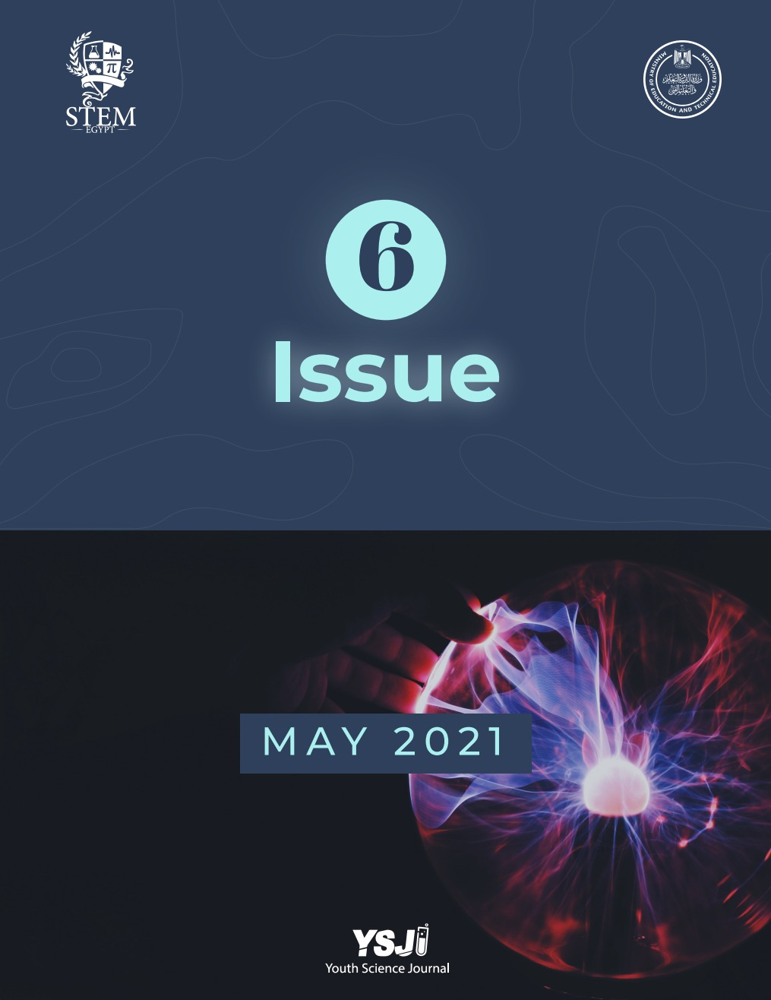
              </div>
            </div>
          </div>
        </div>
        <!-- END: HERO -->

        <!-- <div data-bs-spy="scroll" data-bs-target="#offcanvas-nav-list" data-bs-smooth-scroll="true" tabindex="0" data-bs-rootMargin="0px 0px -10000px"> -->
        <!-- START: SECTION 1 -->
        <section class="section-1" id="section-1">
          <div class="container-lg">
            <div class="border-box">
              <h2 class="section-title text-center">
                <svg
                  class="copy-section-link"
                  section-href="6.1"
                  xmlns="http://www.w3.org/2000/svg"
                  viewBox="0 0 640 512"
                >
                  <path
                    d="M0 256C0 167.6 71.63 96 160 96H264C277.3 96 288 106.7 288 120C288 133.3 277.3 144 264 144H160C98.14 144 48 194.1 48 256C48 317.9 98.14 368 160 368H264C277.3 368 288 378.7 288 392C288 405.3 277.3 416 264 416H160C71.63 416 0 344.4 0 256zM480 416H376C362.7 416 352 405.3 352 392C352 378.7 362.7 368 376 368H480C541.9 368 592 317.9 592 256C592 194.1 541.9 144 480 144H376C362.7 144 352 133.3 352 120C352 106.7 362.7 96 376 96H480C568.4 96 640 167.6 640 256C640 344.4 568.4 416 480 416zM424 232C437.3 232 448 242.7 448 256C448 269.3 437.3 280 424 280H216C202.7 280 192 269.3 192 256C192 242.7 202.7 232 216 232H424z"
                  />
                </svg>
                Letter from the Journal
              </h2>
              <div class="content">
                Dear science enthusiasts,<br />
                <span
                  >As usual, we are super excited to announce the final issue,
                  May 2021 Issue, of the Youth Science Journal’s first volume!
                  If you remember, we said that our April 2021 issue was the
                  biggest one yet! We have not stopped developing from then and
                  have topped our last issue even more by creating a larger
                  issue! With 7 articles coveringthe most diverse topics from
                  exo-planets to asteroid defense mechanisms to open-source
                  software education, weencourage you to take the time to read
                  this one!</span
                >
                <span
                  >When we founded this journal, we had only one goal in mind;
                  “promoting high-school research among youngresearchers.”
                  Without a doubt, we are extremely excited to say that we have
                  achieved a great part of that goal.Since May 2020, the Youth
                  Science journal boasted 6 issues with 30 scientific articles
                  discussing mind-blowing topics from various unique fields! In
                  fact, till now, the Youth Science Journal featured 15
                  different captivating fields in our issues: Neuroscience,
                  Psychology, Computer Science, Chemical Engineering, Aerospace
                  Engineering, Astronomy, Astrophysics, Materials Science,
                  Biomedical Engineering, Biotechnology, Neuroengineering,
                  Artificial Intelligence, Physics, Mechanical Engineering, and
                  Environmental Science.Furthermore, the platform attracted more
                  than 3500+ readers from all over the world reading our
                  articles! This journey was not an easy one though; thus, we
                  would like to thank every contributor, writer and our school
                  for helping us through the management challenges we faced,
                  general problems, and overall motivating us to keep
                  going!</span
                >
                <span
                  >However, although this volume was an astounding success, we
                  still think there is more space to improve, more people to
                  help into the world of research, and more ways to develop!
                  Over the next months, we will start revamping the journal to
                  start the new volume as fresh as ever. We will start by
                  rebuilding our team structure for a more efficient workflow,
                  which will include the
                  <strong>opening of the team’s recruitment</strong>, improve
                  the journal’s format and even change our year-old logo! So,
                  stay tuned on our page for the brand-new logo and
                  recruitment!</span
                >
                <span
                  >We would like to end this letter by saying this all would not
                  be plausible without your support and feedback in helping the
                  Youth Science Journal develop, nurture, and constantly
                  improve. So, we, the Youth Science Journal community, would
                  like to offer our warmest gratitude!</span
                >
                Best Regards,<br />
                Gasser Alwasify (President)<br />
                Saif Taher (Vice-President)<br />
                Moemen Ibrahim (Vice-President)<br />
                Akmal Hashad (Editor-in-Chief)
              </div>
            </div>
          </div>
        </section>
        <!-- END: SECTION 1 -->

        <!-- START: SECTION 2 -->
        <section
          class="section-2"
          id="section-2"
          v-show="currentSection == 'section-2'"
        >
          <div class="container-lg">
            <div class="border-box">
              <h2 class="section-title text-center">
                <svg
                  class="copy-section-link"
                  section-href="6.2"
                  xmlns="http://www.w3.org/2000/svg"
                  viewBox="0 0 640 512"
                >
                  <path
                    d="M0 256C0 167.6 71.63 96 160 96H264C277.3 96 288 106.7 288 120C288 133.3 277.3 144 264 144H160C98.14 144 48 194.1 48 256C48 317.9 98.14 368 160 368H264C277.3 368 288 378.7 288 392C288 405.3 277.3 416 264 416H160C71.63 416 0 344.4 0 256zM480 416H376C362.7 416 352 405.3 352 392C352 378.7 362.7 368 376 368H480C541.9 368 592 317.9 592 256C592 194.1 541.9 144 480 144H376C362.7 144 352 133.3 352 120C352 106.7 362.7 96 376 96H480C568.4 96 640 167.6 640 256C640 344.4 568.4 416 480 416zM424 232C437.3 232 448 242.7 448 256C448 269.3 437.3 280 424 280H216C202.7 280 192 269.3 192 256C192 242.7 202.7 232 216 232H424z"
                  />
                </svg>
                Apophis: Jurassic extinction vol.2, or an amusing stargaze?
              </h2>
              <p class="section-author text-center text-muted">
                Youssef El Gharably<br />Gharbiya STEM High School
              </p>
              <div class="content">
                <p class="content-abstract">
                  <span>Abstract</span>
                  <span
                    >65 million years ago, 77% of life on earth faced Armageddon
                    in one of history's greatest mass extinctions due to a 15km
                    asteroid strike. Dinosaurs never had space agencies, but
                    humans do. Scientists were able to develop mechanisms for
                    asteroid defense that can aid us when there is a fear of
                    strikes in the shape of asteroids, which is what mankind
                    will have to face by 2029 with Asteroid 99942 Apophis.</span
                  >
                </p>
                <div class="subsection">
                  <p class="subtitle">I. Introduction</p>
                  <p>
                    <span
                      >Approximately 65 million years ago, an asteroid roughly
                      10 km in diameter hit the Earth with such a gigantic
                      impact that it killed 77% of the species that were living
                      on the planet then
                      <tooltip
                        data-bs-toggle="tooltip"
                        data-bs-trigger="manual"
                        data-bs-placement="bottom"
                        data-bs-html="true"
                        title="D. P. B. Paul B. Wignall, The end-Triassic and Early Jurassic mass extinction records in the British Isles, Leeds: Science Direct, 2008."
                        reference-no="1.1"
                        >[1]</tooltip
                      >, including the beloved dinosaurs that fill fictional
                      stories and tales. This was the most hazardous asteroid
                      impact recorded in the history we know. Most recent
                      asteroid impacts were the Tunguska impact that wiped out a
                      forest in Siberia the size of Los Anglos in 1908, and the
                      Chelyabinsk asteroid that caused significant damage to
                      7,200 buildings and injured over 1,500 residents in Russia
                      2013 due to its highly hazardous shockwaves caused by the
                      explosions inside the asteroid due to its internal
                      pressure. All of which takes us to our closest estimate of
                      an asteroid impact, Apophis. Apophis, pronounced
                      Uh-pu-fis, is an asteroid that caused loads of concerns
                      since its discovery in December 2004 which will be
                      discussedmore in-depth in the rest of the article.
                    </span>
                  </p>
                </div>
                <div class="subsection">
                  <p class="subtitle">II. What is an Asteroid?</p>
                  <p>
                    <span
                      >Before we unravel the threats caused by Apophis, some
                      names have to be first clarified to avoid any confusion.
                      Most people often mix up Asteroids, Meteors, Meteorites,
                      Meteoroids, and Comets all together assuming they are just
                      flying space rocks. But the fact is that they're different
                      from each other in several ways and characteristics.
                      <tooltip
                        data-bs-toggle="tooltip"
                        data-bs-trigger="manual"
                        data-bs-placement="bottom"
                        data-bs-html="true"
                        title=" R. A. Freedman, Universe, San Diego: W.H. Freeman, 2009"
                        reference-no="1.2"
                        >[2]</tooltip
                      >
                    </span>
                    <span
                      >Asteroids: An asteroid is a rocky or metallic object
                      orbiting the sun with a diameter greater than 1 meter,
                      most asteroids in the solar system lie between the orbit
                      of Mars and Jupiter and are known as the asteroid belt,
                      but a lot of asteroids tend to havedifferent orbits that
                      pass nearby our planet.</span
                    >
                    <span
                      >Meteoroids: A meteoroid is a rocky or metallic object in
                      space smaller than 1 meter in diameter.</span
                    >
                    <span
                      >Meteorites: A meteorite is a meteoroid that makes it to
                      the earth's surface.</span
                    >
                    <span
                      >Meteors: A meteor is the streak of light caused by a
                      meteoroid burning due to its entry into the
                      atmosphere.</span
                    >
                    <span
                      >Comets: A comet is an icy object orbiting the sun which
                      usually spends most of its orbit outside the solar system
                      making them far less hazardous than asteroids.</span
                    >
                  </p>
                </div>
                <div class="subsection">
                  <p class="subtitle">III. How often do NEOs hit the earth?</p>
                  <div class="floating-figure clearfix">
                    <figure class="float-none float-lg-end order-last">
                      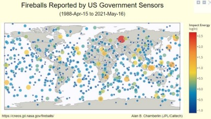
                      <figcaption>
                        Figure 1: Fireballs reported and their impact energy
                      </figcaption>
                    </figure>
                    <span class="order-0"
                      >NEOs, otherwise known as Near Earth Objects, are
                      meteoroids and asteroids orbiting in the solar system. And
                      at some point, these objects tend to get uncomfortably
                      close to our planet so they usually have to be tracked by
                      scientists all around the world to keep taps on whatever
                      may affect us. At a certain point when these objects are
                      big enough to be considered as a potential threat, they
                      are named PHA (Potentially hazardous object). But the
                      question is, do all PHAs hit the earth? To answer this
                      question, take a look at figure 1 and think to yourself,
                      do they always hit the earth?</span
                    >
                  </div>
                  <p>
                    <span
                      >Smaller-sized NEOs typically hit the earth every day. At
                      this particular moment, there is actual space debris
                      entering the earth varying in size from grains of dust to
                      small rocky objects that may or may not burn in the
                      atmosphere, which can be classified as PHAs. But how about
                      the bigger-sized ones, maybe ones the size of the one that
                      caused the Jurassic mass extinction? Due to the existence
                      of the earth's best buddy, the moon, astronomers can study
                      the history of meteor impacts and asteroids; that is due
                      to the moon's surface which is filled with meteorite
                      craters. And due to the absence of an atmosphere strong
                      enough to cause weathering on the moon, these craters
                      remain untouched from the moment the moon was formed.
                      According to studies of craters around planet earth and on
                      the moon, astronomers learned that Asteroids the size of
                      the one that killed the dinosaurs usually tend to hit
                      earth once every 100 million years on average. The ones
                      the size of Tunguska impact tend to hit on average once
                      every 200 years. And small asteroids like the one in the
                      Russian impact of 2013 usually happen once every decade.
                      But the question remains, what if an asteroid the size of
                      Apophis -500 meters in diameter-approaches earth as a PHA,
                      what can astronomers do in this situation?</span
                    >
                  </p>
                </div>
                <div class="subsection">
                  <p class="subtitle">
                    IV. Asteroid Defense Mechanism and DART
                  </p>
                  <p>
                    <span
                      >A profound question: what if dinosaurs worked in space
                      agencies that developed strategies to protect themselves
                      from the asteroid mass extinction? Could they have saved
                      themselves from ceasing to exist? As this is a profound
                      question, it can't be answered. But what is known is that
                      dinosaurs didn't even know they were going to meet their
                      doom except when they saw a streak of light growing
                      exponentially until it landed on earth and took out 77% of
                      earth's species. So what if they had enough warning time,
                      could they have used their natural instinct to run away
                      from the asteroid?</span
                    >
                    <span
                      >Since humans aren't dinosaurs, humans do have a lot of
                      working space agencies filled with brilliant minds that
                      protect us from dangers similar to asteroid strikes, as
                      well as tell us about the universe we live in. Scientists
                      throughout the years have developed an Asteroid Defense
                      Mechanism formed of five steps to protect mankind from
                      such massive disasters.</span
                    >
                  </p>
                  <ol style="list-style-type: lower-roman">
                    <li>Finding:</li>
                    <div class="floating-figure clearfix">
                      <figure class="float-none float-lg-end order-last">
                        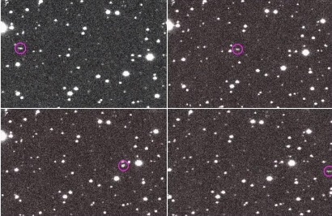
                        <figcaption>
                          Figure 2: An asteroid in the sky
                        </figcaption>
                      </figure>
                      <span class="order-0"
                        >Astronomers around the world tend to spend most time of
                        their night gazing in the dark sky and studying it. You
                        may think that every star you see in the sky is just
                        different from the other stars in temperature, size, and
                        distance from earth. But it's more complicated, from our
                        dark sky we can see stars, asteroids, planets, nebulae,
                        and a lot more. Asteroids tend to be moving a lot faster
                        in our sky relative to the rest of the celestials in the
                        sky, which makes them appear to be moving while
                        everything around them is still. Astronomers can find
                        asteroids in our sky by looking out for an object moving
                        while the rest of the stars around them are still in the
                        frames they capture by telescopes. As shown in figure
                        (2).</span
                      >
                    </div>
                    <li>Tracking:</li>
                    <span
                      >After an observer has found a NEO in the sky, it is sent
                      to the IAU (International Astronomy Union ) to the minor
                      planet center where the data is published for other
                      observers around the world to keep track of the asteroid
                      in the sky using radar to determine the distance between
                      the earth and the asteroid, and taking multiple
                      observations to calculate the asteroid's orbit using
                      Kepler's laws.</span
                    >
                    <li>Characterizing:</li>
                    <span
                      >Several methods are used to determine the characteristics
                      of the asteroid -spin rate, chemical, and physical
                      properties, and whether it is a single or a binary pair.
                      –</span
                    >
                    <span>From these methods are:</span>
                    <div class="floating-figure clearfix">
                      <figure class="float-none float-lg-end order-last">
                        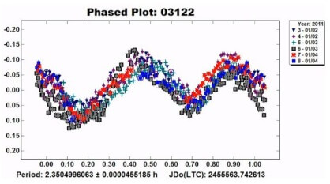
                        <figcaption>
                          Figure 3: Brightness vs. time graph
                        </figcaption>
                      </figure>
                      <span class="order-0"
                        >Brightness vs. time: it is a method to observe the
                        brightness of the asteroid over time to determine the
                        physical properties of the asteroid using its reflective
                        ability as shown in figure (3).</span
                      >
                    </div>
                    <div class="floating-figure clearfix">
                      <figure class="float-none float-lg-end order-last">
                        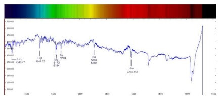
                        <figcaption>
                          Figure 4: Spectrograph of an asteroid
                        </figcaption>
                      </figure>
                      <span class="order-0"
                        >Spectrographs: According to the chemistry of any
                        element, each element absorbs certain bands of the light
                        spectrum which can tell us about the elements inside the
                        asteroid as shown in figure (4).</span
                      >
                      <span class="order-1"
                        >Radar: To determine the distance between the Earth and
                        the asteroid.</span
                      >
                      <span class="order-2"
                        >Thermal infrared imaging: To determine the temperature
                        of the asteroid.</span
                      >
                    </div>
                    <li>Deflecting:</li>
                    <span
                      >After being able to find, track, and study the details of
                      an asteroid, if it was assumed that a certain asteroid may
                      resemble a threat to earth, how can this situation be
                      dealt with?</span
                    >
                    <span
                      >Astronomers have developed several methods to deal with
                      this type of situation if we have enough warning time
                      before the asteroid strike:</span
                    >
                    <span
                      >Kinetic impactor: it is a system launched from the earth
                      to strike the asteroid in just the right amount of kinetic
                      energy to be able to change its orbit around the sun to
                      push it away from the earth and prevent the Earth gravity
                      to pull it down and strike the earth.</span
                    >
                    <span
                      >Gravity tractor: it is a system that works with only
                      smaller-sized asteroids by revolving around the asteroid
                      and affect its gravitational field according to Newton's
                      universal gravitational force law and change its orbit
                      around the sun to push it away from the Earth.</span
                    >
                    <span
                      >Let us assume we don't have enough warning time, what can
                      be done at this particular instant?</span
                    >
                    <span
                      >Usage of nuclear weapons to destroy the asteroid is one
                      of the most effective methods but it's politically
                      challenging for space agencies to use such a dangerous
                      method and avoid the concern of where the asteroid remains
                      would go. The usage of powerful lasers to blow up the
                      asteroid is also considered an effective method.</span
                    >
                    <span
                      >None of these methods have been tested before, but the
                      first asteroid deflecting kinetic impactor experiment
                      (DART Mission) will be launching in November 2021.</span
                    >
                    <li>International Coordination:</li>
                    <span
                      >Asteroid Deflection is a very serious step to establish,
                      let's say that an asteroid is estimated to land somewhere
                      in the state of New York in the United States, but the
                      asteroid gets deflected by a kinetic impactor to change
                      its landing site to Toronto in Canada; the Canadian
                      government is not going to be happy. This is why
                      International Coordination between space agencies
                      worldwide is a must in these situations.</span
                    >
                  </ol>
                </div>
                <div class="subsection">
                  <p class="subtitle">V. Where does Apophis stand here?</p>
                  <div class="floating-figure clearfix">
                    <figure class="float-none float-lg-end order-last">
                      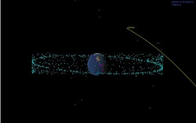
                      <figcaption>
                        Figure 5: The orbit of Apophis (NASA)
                      </figcaption>
                    </figure>
                    <span class="order-0"
                      >Apophis -otherwise known as 99942 Apophis- is an asteroid
                      estimated to be 340 meters in diameter, since its
                      discovery in 2004 it has raised a lot of concerns
                      throughout the media due to its extremely close approach
                      to earth in a couple of years. On 13 of April 2029,
                      Apophis is going to be 30,000 Kilometers away from earth,
                      about 10 times closer than the moon, closer than Earth's
                      geostationary satellites, and will be seen by the naked
                      eye in the sky. Apophis is a name from Egyptian Mythology
                      where Apophis was the mortal enemy of Ra' the sun god.
                      Apophis was thought to bring eternal darkness every night
                      on Earth until Ra' defeats him at sunrise, thus bringing
                      Earth back to light. Imagine how deadly this asteroid may
                      have been if named after eternal darkness? Studies have
                      shown that if Apophis were to hit Earth it would cause
                      destruction extending for hundreds or thousands of
                      kilometers with a strike the power of 1000 megatons of
                      TNT. For a while, Apophis has been thought of as the
                      Jurassic Impact vol.2 and the beginning of the end of the
                      human era. Thanks to NASA's brilliant minds, a deep
                      analysis has been formed on Apophis using the Asteroid
                      Defense Mechanisms which is being updated monthly.
                      <tooltip
                        data-bs-toggle="tooltip"
                        data-bs-trigger="manual"
                        data-bs-placement="bottom"
                        data-bs-html="true"
                        title="I. J. O. a. J. Handal, NASA Analysis: Earth Is Safe From Asteroid Apophis for 100-Plus Years, California, 2021."
                        reference-no="1.3"
                        >[3]</tooltip
                      >
                      NASA was able to determine the precise orbit of Apophis
                      approaching Earth as shown in figure (5).</span
                    >
                  </div>
                  <p>
                    <span
                      >Calculations done by JPL (Jet Propulsion Lab in Caltech)
                      show that there would be a 2.7% possibility of an impact
                      in 2068, but it was quickly ruled out after doing more
                      calculations.
                      <tooltip
                        data-bs-toggle="tooltip"
                        data-bs-trigger="manual"
                        data-bs-placement="bottom"
                        data-bs-html="true"
                        title='D. J. T. a. F. B. a. K. P. R. A. Tucker, "Database of Apophis by JPL," California, 2005.'
                        reference-no="1.4"
                        >[4]</tooltip
                      >
                      However, there are thousands of external sources that may
                      affect the orbit of Apophis in the slightest move, causing
                      an error in these calculations. What makes us sure that
                      another massive object in the solar system won't affect
                      Apophis with gravitational energy causing a change in
                      orbit? Or a possible natural kinetic impactor such as a
                      small-sized asteroid causing a slight change of orbit?
                      There are endless possibilities for this particular
                      situation. That's why the Asteroid Defense Mechanisms have
                      been in continuous development in the past years, to
                      protect mankind from armageddon caused by asteroids. The
                      planetary society organization has partnered up with the
                      International Astronomy Union to give annual grants for
                      Shoemaker NEO Trackers that track asteroids every night to
                      aid the Minor Planetary Center in establishing the
                      Asteroid Defense Mechanism system. Shoemaker NEO Trackers
                      are amateur and professional Astronomers who designate
                      their time at night tracking Near Earth Objects and
                      Potentially Hazardous Objects such as Apophis, like the
                      night guards of planet Earth, they provide a huge amount
                      of data every night to the International Astronomy Union.
                      Thus, protecting planet Earth from Apophis and other PHOs.
                      Apophis isn't the only PHO in our solar system, estimates
                      from the IAU show that there are about 3,400 PHOs in the
                      solar system and thousands more that haven't been
                      discovered yet.
                    </span>
                  </p>
                </div>
                <div class="subsection">
                  <p class="subtitle">VI. Conclusion</p>
                  <p>
                    <span
                      >Awareness needs to be raised regarding Asteroid Defense
                      Mechanisms and how scientists can contribute to providing
                      a safe life for mankind. Also, more funds need to be given
                      to space agencies to develop their strategies of Asteroid
                      Defense, if fear strikes at any time, space agencies
                      coming together will be our only hope.</span
                    >
                  </p>
                </div>
                <div class="references">
                  <div class="subsection">
                    <p class="subtitle">VII. References</p>
                    <div class="row">
                      <div class="col-md-6">
                        <p reference-no="1.1"></p>
                        <p reference-no="1.2"></p>
                      </div>
                      <div class="col-md-6">
                        <p reference-no="1.3"></p>
                        <p reference-no="1.4"></p>
                      </div>
                    </div>
                  </div>
                </div>
              </div>
            </div>
          </div>
        </section>
        <!-- END: SECTION 2 -->

        <!-- START: SECTION 3 -->
        <section
          class="section-3"
          id="section-3"
          v-show="currentSection == 'section-3'"
        >
          <div class="container-lg">
            <div class="border-box">
              <h2 class="section-title text-center">
                <svg
                  class="copy-section-link"
                  section-href="6.3"
                  xmlns="http://www.w3.org/2000/svg"
                  viewBox="0 0 640 512"
                >
                  <path
                    d="M0 256C0 167.6 71.63 96 160 96H264C277.3 96 288 106.7 288 120C288 133.3 277.3 144 264 144H160C98.14 144 48 194.1 48 256C48 317.9 98.14 368 160 368H264C277.3 368 288 378.7 288 392C288 405.3 277.3 416 264 416H160C71.63 416 0 344.4 0 256zM480 416H376C362.7 416 352 405.3 352 392C352 378.7 362.7 368 376 368H480C541.9 368 592 317.9 592 256C592 194.1 541.9 144 480 144H376C362.7 144 352 133.3 352 120C352 106.7 362.7 96 376 96H480C568.4 96 640 167.6 640 256C640 344.4 568.4 416 480 416zM424 232C437.3 232 448 242.7 448 256C448 269.3 437.3 280 424 280H216C202.7 280 192 269.3 192 256C192 242.7 202.7 232 216 232H424z"
                  />
                </svg>
                Does Eidetic memory and photographic memory exist: An in-depth
                investigation of Eidetic memory
              </h2>
              <p class="section-author text-center text-muted">
                Fares Ayman<br />Obour STEM School
              </p>
              <div class="content">
                <p class="content-abstract">
                  <span>Abstract</span>
                  <span
                    >Imagine being able to flick a screenshot of what someone is
                    looking at. It sounds like photographic memory, a superhuman
                    skill. The concept of storing everything someone has ever
                    seen, filing it away like a file in a cabinet, and
                    remembering it with all the needed details. The ability to
                    perceive an object shortly after looking away is known as
                    eidetic memory. The vision lasts for a few seconds or even
                    less than one second for most people. Accordingly, in 1964,
                    a study was made to conduct the relationship between eidetic
                    memory and age. In their experiments, children were able to
                    obtain the best results when asked to describe the
                    components of a certain image after seeing it for 30
                    seconds. However, some people still have the ability to
                    memorize books, images, and all types of texts in a feature
                    known as photographic memory.</span
                  >
                </p>
                <div class="subsection">
                  <p class="subtitle">I. Background</p>
                  <p>
                    <span
                      >Eidetic memory refers to a person's ability to recall a
                      huge number of pictures, sounds, and objects in an
                      apparently infinite volume
                      <tooltip
                        data-bs-toggle="tooltip"
                        data-bs-trigger="manual"
                        data-bs-placement="bottom"
                        data-bs-html="true"
                        title="Loading ..."
                        reference-no="2.1"
                        >[1] </tooltip
                      >. Eidetic means "very precise and vivid recollection of
                      visual pictures," as the name implies
                      <tooltip
                        data-bs-toggle="tooltip"
                        data-bs-trigger="manual"
                        data-bs-placement="bottom"
                        data-bs-html="true"
                        title="Loading ..."
                        reference-no="2.2"
                        >[2]</tooltip
                      >. What is known about this type of memory is that it is
                      also known as photographic memory or enhanced memory.
                      People with this exceptional ability can recall and
                      visualize a whole city's skyline after only one brief
                      helicopter ride, for example. Eidetic memory, as
                      previously said, allows a person to retain numbers,
                      sentences, and sights, but it is frequently noticed that
                      the individual does not have remarkable memory in other
                      areas. What is unknown about this talent is that it may be
                      developed in a variety of ways to remain not only by
                      childhood but also after maturity. This is a significant
                      topic since it symbolizes a considerable talent, perhaps
                      even a superhuman ability. This is associated with its
                      significance to individuals and how it might improve their
                      lives.</span
                    >
                    <span
                      >The mechanism of this ability will be studied in this
                      research, along with examples of persons who possess it.
                      The information presented below depends on a variety of
                      reliable sources and research articles.</span
                    >
                  </p>
                </div>
                <div class="subsection">
                  <p class="subtitle">II. Mechanism</p>
                  <p>
                    <span
                      >The brain is widely considered to be the organ in charge
                      of the body's whole range of activities. The posterior
                      parietal cortex is where eidetic memory takes place. The
                      parietal cortex is responsible for integrating data from
                      many senses to create a cohesive picture of the
                      environment. It combines information from both the visual
                      and dorsal pathways. This skill helps us to respond to
                      items in the environment by coordinating our motions. The
                      parietal lobe is also in charge of human bodily sensations
                      including touch, temperature, pressure, and pain. As a
                      result, this area of the brain is extremely critical to
                      the human body. Furthermore, this area of the brain is
                      responsible for a variety of memory functions, including
                      eidetic memory
                      <tooltip
                        data-bs-toggle="tooltip"
                        data-bs-trigger="manual"
                        data-bs-placement="bottom"
                        data-bs-html="true"
                        title="Loading ..."
                        reference-no="2.3"
                        >[3]</tooltip
                      >. Any damage in the posterior parietal cortex can lead to
                      a neurological order named Hemi spatial neglect.
                      Individuals suffering from this condition are unable to
                      pay attention to people or objects on the side opposite
                      the affected region. Those patients may only eat from one
                      side of their dish or dress one side of their bodies. Even
                      in their imaginations, this visual neglect existed
                      <tooltip
                        data-bs-toggle="tooltip"
                        data-bs-trigger="manual"
                        data-bs-placement="bottom"
                        data-bs-html="true"
                        title="Loading ..."
                        reference-no="2.4"
                        >[4] </tooltip
                      >.</span
                    >
                    <span
                      >Several studies have shown that the parietal cortex is
                      important in short-term memory, such as Eidetic memory. In
                      the brain, it is responsible for the generation of visual
                      pictures. A little is known about long-term memory, and it
                      varies from one individual to the next. During
                      neuroimaging, the parietal cortices are commonly active.
                      According to research, when correctly recognizing old
                      items or photographs rather than fresh ones, the posterior
                      parietal cortex showed a lot of activity. This helps to
                      demonstrate that the brain has the ability to recall a
                      previously stored image
                      <tooltip
                        data-bs-toggle="tooltip"
                        data-bs-trigger="manual"
                        data-bs-placement="bottom"
                        data-bs-html="true"
                        title="Loading ..."
                        reference-no="2.5"
                        >[5]</tooltip
                      >.</span
                    >
                    <span
                      >This great activity in the posterior parietal cortex also
                      demonstrates that neuroimaging is not restricted to a
                      certain age group. This means that adults may recall texts
                      and images based on their superpowers rather than their
                      age. Mnemonics and other approaches have proved to improve
                      memory to recall images and texts better can be used to
                      enhance this talent and be able to behave better at
                      memorizing things
                      <tooltip
                        data-bs-toggle="tooltip"
                        data-bs-trigger="manual"
                        data-bs-placement="bottom"
                        data-bs-html="true"
                        title="Loading ..."
                        reference-no="2.6"
                        >[6] </tooltip
                      >.</span
                    >
                    <span
                      >According to research published by the National Academy
                      of Sciences, children up to the age of 12 can store and
                      retain pictures and sentences in a visual form in their
                      brain, as well as the ability to interpret this
                      information again. Adults cannot perform this talent,
                      although it is still possible for certain people to recall
                      visuals in their brains. This may be linked back to their
                      minds and the posterior parietal lobe's ability to retain
                      images. Although this talent is extremely rare in adults,
                      it does come in the form of Photographic memories. It's
                      worth mentioning that eidetic memory only lasts a short
                      time; but, with training or redundancy of pictures and
                      visuals, they may be kept permanently and retrieved at any
                      moment, resulting in photographic memory
                      <tooltip
                        data-bs-toggle="tooltip"
                        data-bs-trigger="manual"
                        data-bs-placement="bottom"
                        data-bs-html="true"
                        title="Loading ..."
                        reference-no="2.7"
                        >[7]</tooltip
                      >.
                    </span>
                    <span
                      >There are undoubtedly certain cases that stand out when
                      compared to the regular circumstances in which this
                      phenomenon occurs. Some people, for example, still retain
                      the ability to conjure up a whole mental image that may
                      remain for a long period. Those individuals may even be
                      able to draw the text or image based on their own visions.
                      Stephen Wiltshire is as near to a human camera as you can
                      get
                      <tooltip
                        data-bs-toggle="tooltip"
                        data-bs-trigger="manual"
                        data-bs-placement="bottom"
                        data-bs-html="true"
                        title="Loading ..."
                        reference-no="2.8"
                        >[8]</tooltip
                      >. In other cases, some people can have the ability to
                      remember everything in their life including all details
                      that occurred, even if the event is from a long time ago.
                      HSAM, or Highly Superior Autobiographical Memory, is the
                      term given to this condition
                      <tooltip
                        data-bs-toggle="tooltip"
                        data-bs-trigger="manual"
                        data-bs-placement="bottom"
                        data-bs-html="true"
                        title="Loading ..."
                        reference-no="2.9"
                        >[9]</tooltip
                      >.</span
                    >
                  </p>
                </div>
                <div class="subsection">
                  <p class="subtitle">III. Conclusion</p>
                  <p>
                    <span
                      >Finally, despite the disagreement among scientists over
                      the existence of photographic memory and eidetic memory,
                      all of the mentioned cases and information are nothing
                      more than proof that humans can have the ability to retain
                      their knowledge in the form of visuals. According to
                      research, exercising four hours after any event might help
                      people remember things better. Finally, although memories
                      are fairly real, although maybe not living, trust in them
                      makes them more tangible. As Said by Steven Wright:
                      "everyone can have a photographic memory, some just do not
                      have the film".</span
                    >
                  </p>
                </div>
                <div class="references">
                  <div class="subsection">
                    <p class="subtitle">IV. References</p>
                    <div class="row">
                      <div class="col-md-6">
                        <p reference-no="2.1"></p>
                        <p reference-no="2.2"></p>
                        <p reference-no="2.3"></p>
                        <p reference-no="2.4"></p>
                        <p reference-no="2.5"></p>
                        <p reference-no="2.6"></p>
                      </div>
                      <div class="col-md-6">
                        <p reference-no="2.7"></p>
                        <p reference-no="2.8"></p>
                        <p reference-no="2.9"></p>
                        <p reference-no="2.10"></p>
                        <p reference-no="2.11"></p>
                      </div>
                    </div>
                  </div>
                </div>
              </div>
            </div>
          </div>
        </section>
        <!-- END: SECTION 3 -->

        <!-- START: SECTION 4 -->
        <section
          class="section-4"
          id="section-4"
          v-show="currentSection == 'section-4'"
        >
          <div class="container-lg">
            <div class="border-box">
              <h2 class="section-title text-center">
                <svg
                  class="copy-section-link"
                  section-href="6.4"
                  xmlns="http://www.w3.org/2000/svg"
                  viewBox="0 0 640 512"
                >
                  <path
                    d="M0 256C0 167.6 71.63 96 160 96H264C277.3 96 288 106.7 288 120C288 133.3 277.3 144 264 144H160C98.14 144 48 194.1 48 256C48 317.9 98.14 368 160 368H264C277.3 368 288 378.7 288 392C288 405.3 277.3 416 264 416H160C71.63 416 0 344.4 0 256zM480 416H376C362.7 416 352 405.3 352 392C352 378.7 362.7 368 376 368H480C541.9 368 592 317.9 592 256C592 194.1 541.9 144 480 144H376C362.7 144 352 133.3 352 120C352 106.7 362.7 96 376 96H480C568.4 96 640 167.6 640 256C640 344.4 568.4 416 480 416zM424 232C437.3 232 448 242.7 448 256C448 269.3 437.3 280 424 280H216C202.7 280 192 269.3 192 256C192 242.7 202.7 232 216 232H424z"
                  />
                </svg>
                The Role of Neuroplasticity in Learning
              </h2>
              <p class="section-author text-center text-muted">
                Mazen Y. Aboeed<br />Gharbiya STEM School
              </p>
              <div class="content">
                <p class="content-abstract">
                  <span>Abstract</span>
                  <span
                    >Neuroscience is one of the greatest supporters in the
                    understanding of human physiology and what actually makes us
                    who we are. How do we learn? Why do some people learn things
                    more quickly and easily than others? We will go on a journey
                    inside the most complex organ in the universe learning more
                    about the science of Neuroplasticity while we try answering
                    these questions. After reading this article, you will leave
                    with a new recognition of how majestic your brain is. Your
                    plastic brain is regularly and continually being formed by
                    the world around you. That change can be for the better and
                    even for the worse. Understanding that everything you do,
                    encounter, and experience can change your brain is a crucial
                    thing. Moreover, learning is not that easy. It involves a
                    physical structure change to your brain and in order to do
                    that you have to practice, exercise, and struggle more to
                    achieve your dream.</span
                  >
                </p>
                <div class="subsection">
                  <p class="subtitle">I. Introduction</p>
                  <p>
                    <span
                      >Everything we understand about the brain is developing at
                      a stunning and astonishing pace; what we thought we
                      understood about the brain turns out to be inaccurate and
                      incomplete. For example, we used to believe that the mind
                      couldn't change after childhood, which is a misconception.
                      Another misconception is that the brain is silent when we
                      are at rest; however, it turned out that even when we are
                      thinking of nothing, our brain is extremely active. Later,
                      many progressions in technology such as MRI allowed us to
                      make many important discoveries. Perhaps the most exciting
                      and intriguing one is thatthe brain is changing every time
                      we learn a new fact or skill. Our brain is actually
                      changing with every single behavior we do. It is what we
                      call the science of Neuroplasticity.</span
                    >
                    <span
                      >The brain could change in two different ways to sustain
                      learning. The first one is in a chemical way such that the
                      brain works by transferring chemical signals between
                      neurons and this triggers a sequence of actions and
                      reactions, but this only supports shortterm improvement.
                      The second is by modifying its physical structure during
                      learning since the brain can actually alter the
                      connections between neurons changing the arrangement and
                      composition of the brain and it takes more time. This is
                      related to longterm improvement. Structural changes also
                      can form integrated networks and regions that function
                      together for learning and create specific regions
                      essential for particular behaviors, changing the structure
                      of the brain in the process
                      <tooltip
                        data-bs-toggle="tooltip"
                        data-bs-trigger="manual"
                        data-bs-placement="bottom"
                        data-bs-html="true"
                        title="Loading ..."
                        reference-no="3.1"
                        >[1]</tooltip
                      >.</span
                    >
                  </p>
                </div>
                <div class="subsection">
                  <p class="subtitle">II. The Brain</p>
                  <p>
                    <span
                      >Did you know obviously that your brain is needed for
                      everything we do - how we think, feel, and act. The brain
                      is the most complex organ; there is nothing as complex as
                      the human brain. It is reckoned that the brain ought one
                      hundred billion nerve cells, and every two cells are not
                      connected to each other in a one-to-one connection but up
                      to ten thousand individual connections. So, fun fact: you
                      have more connections in your skull than there are stars
                      in the universe. Moreover, even though your brain is 2% of
                      your body weight, it uses 20-30% of the calories that you
                      consume. So, about the breakfast you had this morning,
                      almost the third of it goes to feed this 2% of your body's
                      weight
                      <tooltip
                        data-bs-toggle="tooltip"
                        data-bs-trigger="manual"
                        data-bs-placement="bottom"
                        data-bs-html="true"
                        title="Loading ..."
                        reference-no="3.2"
                        >[2] </tooltip
                      >.</span
                    >
                  </p>
                  <div class="floating-figure clearfix">
                    <figure class="float-none float-lg-end order-last">
                      
                      <figcaption>
                        Figure 1: MRI images of healthy and unhealthy brains
                      </figcaption>
                    </figure>
                    <span class="order-0"
                      >Furthermore, the brain is the main organ of personality,
                      character, judgment, and innovation. So, when your brain
                      works right, your work is excellent; and when your brain
                      has trouble, you are much more likely to have trouble in
                      your life. With a healthier brain, it is fairly clear that
                      you are happier, healthier, wealthier, wiser, and more
                      creative. The health of the brain either accelerates
                      innovation or decelerates it, and the thing that affects
                      your brain health is your behavior. Your behaviors and
                      what you learn every day affect the brain directly in the
                      way of neuroplasticity. By using MRI technology, we can
                      get images of the brain as shown in figure 1 where the
                      first and third rows belong to the "Normal" category
                      whereas the second and fourth rows belong to the
                      "Abnormal" category
                      <tooltip
                        data-bs-toggle="tooltip"
                        data-bs-trigger="manual"
                        data-bs-placement="bottom"
                        data-bs-html="true"
                        title="Loading ..."
                        reference-no="3.3"
                        >[3] </tooltip
                      >.</span
                    >
                  </div>
                </div>
                <div class="subsection">
                  <p class="subtitle">III. An Intriguing Case Study</p>
                  <p></p>
                  <div class="floating-figure clearfix">
                    <figure class="float-none float-lg-end order-last">
                      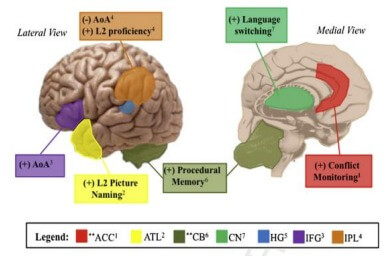
                      <figcaption>
                        Figure 2: Regions labeled with “**” in the above legend
                        indicate bilateral GM. Further, (+) means positive
                        correlation whereas (-) means negative correlation.
                      </figcaption>
                    </figure>
                    <span class="order-0"
                      >An interesting example of how learning changes our brain
                      structure for the better of keeping it healthy is that
                      bilingualism provides a protective mechanism against
                      age-related cognitive decline, which was examined by a
                      recent study by Jubin Abutalebi and David Green. These
                      authors observed a group of aging participants from Hong
                      Kong, who spoke either English and Chinese or Mandarin and
                      Cantonese, then analyzed the brain structure and language
                      performance of them with another group of monolinguals,
                      whose mother language is Italian, in a picture-naming task
                      in which L1 (monolinguals and bilinguals) and L2
                      (bilinguals only). The two groups were about the same age
                      (mean age of 62), education, and cognitive abilities. The
                      collected data showed that bilinguals had a greater GM
                      (gray matter) amount than monolinguals, particularly in
                      the left anterior division of the temporal pole (TP).
                      Further ROI-based examinations also showed that the naming
                      performance of the L2 group was positively proportional
                      with the GM amount in the left TP. The authors inferred
                      that the TP might play a significant role in bilingual
                      lexical conceptual processing and that bilingual knowledge
                      works as a protective factor to the rapid reduction of GM
                      amount in this region in normal aging. Moreover, in figure
                      2, a representation of the regions that show increased GM
                      amount with group comparisons of Bilinguals vs
                      Monolinguals
                      <tooltip
                        data-bs-toggle="tooltip"
                        data-bs-trigger="manual"
                        data-bs-placement="bottom"
                        data-bs-html="true"
                        title="Loading ..."
                        reference-no="3.4"
                        >[4]</tooltip
                      >.</span
                    >
                  </div>
                </div>
                <div class="subsection">
                  <p class="subtitle">IV. You have to do the work!</p>
                  <p>
                    <span
                      >The main operator of the modification in the brain is
                      nothing but our behavior. So, there is nothing called a
                      drug for neuroplasticity. Nothing is more efficient than
                      practice and exercise. The bottom line is: You have to do
                      the work. In fact, research has shown that increasing
                      difficulty and struggle during practice at learning
                      actually leads to more prominent development in the brain.
                      The problem here is that neuroplasticity can work either
                      the positive when you learn something new and skill or the
                      negative way when you forget something or get addicted to
                      drugs. The brain is remarkably plastic; it is shaped not
                      only by what you do but also by what you don't do
                      <tooltip
                        data-bs-toggle="tooltip"
                        data-bs-trigger="manual"
                        data-bs-placement="bottom"
                        data-bs-html="true"
                        title="Loading ..."
                        reference-no="3.1"
                        >[1]</tooltip
                      >.
                    </span>
                  </p>
                </div>
                <div class="subsection">
                  <p class="subtitle">V. Conclusion</p>
                  <p>
                    <span
                      >Behaviors that we employ every day are critical; they are
                      changing our brains. So, when you have just finished
                      reading this article now, your brain will not be the same
                      as when you started reading. The amazing part is that
                      every reader will change his brain differently.
                      Understanding these differences and variabilities will
                      enable the next great advance in the field of
                      neuroscience. Study what you learn best. Repeat these
                      behaviors that keep your brain healthy, and break those
                      that make it unhealthy. Practice! Learning is all about
                      doing the work that your brain requires. The best
                      strategies are going to vary between people. Actually, it
                      is going to vary within a single individual. For instance,
                      one can learn to play the piano fast but struggle to play
                      football. So, when you leave today, go out and build the
                      brain you want!</span
                    >
                  </p>
                </div>
                <div class="references">
                  <div class="subsection">
                    <p class="subtitle">VI. References</p>
                    <div class="row">
                      <div class="col-md-6">
                        <p reference-no="3.1"></p>
                        <p reference-no="3.2"></p>
                      </div>
                      <div class="col-md-6">
                        <p reference-no="3.3"></p>
                        <p reference-no="3.4"></p>
                      </div>
                    </div>
                  </div>
                </div>
              </div>
            </div>
          </div>
        </section>
        <!-- END: SECTION 4 -->

        <!-- START: SECTION 5 -->
        <section
          class="section-5"
          id="section-5"
          v-show="currentSection == 'section-5'"
        >
          <div class="container-lg">
            <div class="border-box">
              <h2 class="section-title text-center">
                <svg
                  class="copy-section-link"
                  section-href="6.5"
                  xmlns="http://www.w3.org/2000/svg"
                  viewBox="0 0 640 512"
                >
                  <path
                    d="M0 256C0 167.6 71.63 96 160 96H264C277.3 96 288 106.7 288 120C288 133.3 277.3 144 264 144H160C98.14 144 48 194.1 48 256C48 317.9 98.14 368 160 368H264C277.3 368 288 378.7 288 392C288 405.3 277.3 416 264 416H160C71.63 416 0 344.4 0 256zM480 416H376C362.7 416 352 405.3 352 392C352 378.7 362.7 368 376 368H480C541.9 368 592 317.9 592 256C592 194.1 541.9 144 480 144H376C362.7 144 352 133.3 352 120C352 106.7 362.7 96 376 96H480C568.4 96 640 167.6 640 256C640 344.4 568.4 416 480 416zM424 232C437.3 232 448 242.7 448 256C448 269.3 437.3 280 424 280H216C202.7 280 192 269.3 192 256C192 242.7 202.7 232 216 232H424z"
                  />
                </svg>
                The correspondence of artificial intelligence with the
                psychological patterns, and application of recognition systems
                and gamification in accelerating recycling worldwide
              </h2>
              <p class="section-author text-center text-muted">
                Ali Nawar | Mohamed Hany<br />STEM High School for boys 6<sup
                  >th</sup
                >
                of October
              </p>
              <div class="content">
                <p class="content-abstract">
                  <span>Abstract</span>
                  <span
                    >Approaching the end of the last decade, artificial
                    technology has been unutilized in fields such as healthcare,
                    E-commerce, agriculture, etc. For the mere purpose of
                    diminishing the inaccuracies found in human-adapted
                    practices, Ai technology is aptly more sufficient; produces
                    fewer errors and can be reformed and applied in numerous
                    fields. The environmental companion—a product of AI
                    technology—renovates the foundation of recycling. Now with
                    access to a recycling medium, people can view their carbon
                    footprints, monitor their plastic waste, and recycle their
                    materials with gained virtual points.</span
                  >
                </p>
                <div class="subsection">
                  <p class="subtitle">I. Introduction</p>
                  <p>
                    <span
                      >Plastic is drawn from two primary resources: ordinary
                      littering and materials disposal, which eventually pile up
                      in water bodies. For instance, the Danube River—the second
                      largest river in Europe that flows into the mouth of the
                      black sea, transports plastic materials reckoned at 4.2
                      metric tons into its drainage base. The interference of
                      physical factors such as the wind and current flow
                      determines the buoyance and movement of these plastic
                      items within a water body. For example, windage
                      contributes to measuring the force required to
                      transporting these items.</span
                    >
                  </p>
                  <div class="floating-figure clearfix">
                    <figure class="float-none float-lg-end order-last">
                      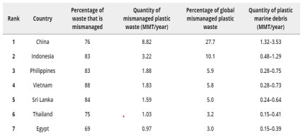
                      <figcaption>
                        Figure 4: Quantity of mismanaged plastic wastes
                      </figcaption>
                    </figure>
                    <span class="order-0"
                      >By the end of this disposition, plastic settles in water
                      bodies in articulated spaces, eventually being eroded into
                      debris by the external circumstances of sunlight,
                      oxidation, and current.
                      <tooltip
                        data-bs-toggle="tooltip"
                        data-bs-trigger="manual"
                        data-bs-placement="bottom"
                        data-bs-html="true"
                        title="Loading ..."
                        reference-no="4.1"
                        >[1]</tooltip
                      >
                      The environmental conservation agency pronounced countries
                      located at coastlines the foremost exporters of Plastic
                      mismanagement (With a percentage of 83% impact) amongst
                      which, Egypt sets atop in the seventh-place (69%), as
                      shown below in the figure. Countries located at coastlines
                      the foremost exporters of Plastic mismanagement (With a
                      percentage of 83% impact) amongst which, Egypt sets atop
                      in the seventh-place (69%), as shown below in figure
                      1.</span
                    >
                  </div>
                </div>
                <div class="subsection">
                  <p class="subtitle">
                    II. AI application in mitigatingmismanagement
                  </p>
                  <p>
                    <span
                      >Recycling, unlike other disposal methods, is inhibited by
                      factors such as commodity, availability, and collective
                      efforts of the community.
                      <tooltip
                        data-bs-toggle="tooltip"
                        data-bs-trigger="manual"
                        data-bs-placement="bottom"
                        data-bs-html="true"
                        title="Loading ..."
                        reference-no="4.2"
                        >[2]</tooltip
                      >
                      Accordingly, difficulties with recycling are represented
                      in the collection and sorting of plastic waste.</span
                    >
                    <span
                      >Nevertheless, an AI system could mount up the adaption of
                      recycling. For instance, if a system where plastic
                      consumers could document, recycle, and gain virtual points
                      in exchange for their plastic consumption could be the
                      ultimate solution to change the stir in consuming these
                      materials.</span
                    >
                    <span
                      >The environmental companion, founded on the use of AI
                      systems, virtual points, and the psychology of the market,
                      meets the criterion in that it triggers the patterns of
                      self-awareness of mostly Genz and millennials to detract
                      the waste by-product of plastic consumption and
                      production.</span
                    >
                  </p>
                </div>
                <div class="subsection">
                  <p class="subtitle">
                    III. The philosophy behind the application
                  </p>
                  <p>
                    <span
                      >The environmental companion is an application wherein
                      people access a credible medium through which they can
                      recycle, be of zero plastic waste thereof. The application
                      consists of three different sections, each articulated to
                      a function, however, the sections abide by a certain
                      feedback mechanism; recollected in the creation flowchart
                      of this application, it was found out that users engaged
                      seldomly when the application only consisted mostly of
                      either texts or illustrative graphics. The primary
                      (Environment-or I) section is the profile: where the data
                      about the user is to be included, such as names, email
                      addresses, and a unique code for this user. According to
                      the app market, citing patterns of success, the sense of
                      personalization renders more engagement with the overall
                      process. Furthermore, the consistency of the sections’
                      pronunciations and the purpose of said sections draw the
                      user to be more decisive when using the application. The
                      primary section includes a display of the virtual points
                      (environs) added at the end of every successful recycling
                      procedure, these virtual points can be traded with
                      biodegradable materials with partnering agencies such as
                      the recycling local committee. The second is the data
                      recorder. In this part, the consumers will be able to
                      record their plastic usage data through AI recognizers
                      that will recognize the serial code embedded on the
                      material, the serial code details dimensions such as
                      weight, volume, and density of the material. The third
                      section is the activity curve, which showcases the
                      immensity of plastic used and recycling occurrence in
                      respect totime. According to the science of feedback, the
                      user will mentally tie every rise and fall within the
                      activity curve according to the virtual points they gain.
                      Thus, this gamification system will trigger more
                      engagement, more recycling thereof.</span
                    >
                  </p>
                </div>
                <div class="subsection">
                  <p class="subtitle">IV. Proceeding to the final step</p>
                  <p>
                    <span
                      >Upon fulfillment of the recycling task, the users will be
                      required to toss their materials into trash bins. These
                      bins are exclusively designed with sensors of weight and
                      volume.</span
                    >
                    <span
                      >These sensors are not only compromised of a system that
                      will recognize the dimensions but will also communicate
                      data back and forth from the bin to the administrative
                      application. These trash bins are designed for the sole
                      purpose of collecting the to-be recycling materials
                      andensuring credibility between the administrators and
                      users as to when handing out virtual points to the users.
                      When the user initiates a recycling process—by having the
                      serial code recognized on the application, they will
                      receive anemail of the foremost nearby trash bin in their
                      proximity. Once the materials are deposited in the bin and
                      the dimensions data are congruent: the recycling process
                      will be affirmed, and the user will be notified of a rise
                      in their virtual points.</span
                    >
                  </p>
                </div>
                <div class="subsection">
                  <p class="subtitle">V. Conclusion</p>
                  <p>
                    <span
                      >The properties that give rise to plastic affordability,
                      availability, and excessive use in the market, also give
                      rise to the foremost pollutant in water bodies
                      <tooltip
                        data-bs-toggle="tooltip"
                        data-bs-trigger="manual"
                        data-bs-placement="bottom"
                        data-bs-html="true"
                        title="Loading ..."
                        reference-no="4.3"
                        >[3]</tooltip
                      >. Thus, if consumed with the absence of treatment via
                      recycling, the plastic could evidentially pile up in the
                      habitats affecting both aquatic andland creatures. The
                      debris of plastic directly influences the habitat of
                      mussels, salt-march grasses, and corals, alongside
                      creatures such as reptiles and turtles who rely on
                      water18spaces for their survival. Ultimately, the mission
                      to mitigate plastic use is collectively based on the
                      empirical shifting in the regulations set by the
                      environmental agencies worldwide. Thus, with a change such
                      as that of implementing the environmental companion,the
                      plastic crisis will eventually be eradicated.</span
                    >
                  </p>
                </div>
                <div class="references">
                  <div class="subsection">
                    <p class="subtitle">VI. References</p>
                    <div class="row">
                      <div class="col-md-6">
                        <p reference-no="4.1"></p>
                        <p reference-no="4.2"></p>
                      </div>
                      <div class="col-md-6">
                        <p reference-no="4.3"></p>
                      </div>
                    </div>
                  </div>
                </div>
              </div>
            </div>
          </div>
        </section>
        <!-- END: SECTION 5 -->

        <!-- START: SECTION 6 -->
        <section
          class="section-6"
          id="section-6"
          v-show="currentSection == 'section-6'"
        >
          <div class="container-lg">
            <div class="border-box">
              <h2 class="section-title text-center">
                <svg
                  class="copy-section-link"
                  section-href="6.6"
                  xmlns="http://www.w3.org/2000/svg"
                  viewBox="0 0 640 512"
                >
                  <path
                    d="M0 256C0 167.6 71.63 96 160 96H264C277.3 96 288 106.7 288 120C288 133.3 277.3 144 264 144H160C98.14 144 48 194.1 48 256C48 317.9 98.14 368 160 368H264C277.3 368 288 378.7 288 392C288 405.3 277.3 416 264 416H160C71.63 416 0 344.4 0 256zM480 416H376C362.7 416 352 405.3 352 392C352 378.7 362.7 368 376 368H480C541.9 368 592 317.9 592 256C592 194.1 541.9 144 480 144H376C362.7 144 352 133.3 352 120C352 106.7 362.7 96 376 96H480C568.4 96 640 167.6 640 256C640 344.4 568.4 416 480 416zM424 232C437.3 232 448 242.7 448 256C448 269.3 437.3 280 424 280H216C202.7 280 192 269.3 192 256C192 242.7 202.7 232 216 232H424z"
                  />
                </svg>
                Open-source software in education: a modernreview of a case
                study
              </h2>
              <p class="section-author text-center text-muted">
                Bassel Walid<br />STEM High School for boys 6<sup>th</sup> of
                October
              </p>
              <div class="content">
                <p class="content-abstract">
                  <span>Abstract</span>
                  <span
                    >Since the rise of technology, many of the new folds of the
                    new generations have been attracted to programming and
                    computer science as their majors. This gave rise to large
                    numbers of programmers all over the world with different
                    skillsets and programming experiences. Open-source software
                    (OSS) comes as a natural result of the wide variety of ideas
                    that come to the minds of programmers and the collaborative
                    nature of the field that emphasizes the creation of bigger
                    software from smaller pieces of free and simple pieces.
                    Open-source software has come a long way since the first
                    piece of major OSS (the Linux kernel and its development
                    <tooltip
                      data-bs-toggle="tooltip"
                      data-bs-trigger="manual"
                      data-bs-placement="bottom"
                      data-bs-html="true"
                      title="Loading ..."
                      reference-no="5.1"
                      >[1]</tooltip
                    >) and its importance in education has increased, this why
                    this paper acts as a review of the current progress of OSS
                    in education.</span
                  >
                </p>
                <div class="subsection">
                  <p class="subtitle">I. Introduction</p>
                  <p>
                    <span
                      >Since the inception of OSS (open-source software), it has
                      been a major source of revenue from operations in many
                      places from small startups to international
                      multimillion-dollar conglomerates and has become a popular
                      stable in IT departments and any successful IT
                      toolkit.</span
                    >
                    <span
                      >With the Internet's arrival in the early 1990s,
                      programmers from various locations around the world have
                      been able to work together and distribute, share, and
                      collaborate on software easily. Along with the various
                      advantages of OSS, the vastly improved ability for
                      developers to communicate has increased the outreach of
                      OSS.</span
                    >
                    <span
                      >The previously mentioned popularity of OSS gave rise to
                      many important pieces of OSS that became a major part of
                      modern-day software such as the Linus kernel and the GNU
                      compiler collection -the C++ compiler in which is one of
                      the most used-, Python, VLC, Mozilla’s Firefox, and
                      Blender.</span
                    >
                    <span
                      >In this article, the role and position of OSS in
                      education are discussed. First, a history of OSS is given
                      with the story of the first piece of OSS. Second, a case
                      study on using OSS in education is studied and reviewed.
                      finally, then compared to the possible outcomes if the
                      same experiment is repeated in the modern-day.</span
                    >
                  </p>
                </div>
                <div class="subsection">
                  <p class="subtitle">II. History and Background</p>
                  <p>
                    <span
                      >Since its creation, the history of open-source software
                      has been filled with many achievements, failures, and
                      unique events that give it its rich, vibrant and,
                      interesting background.</span
                    >
                    <span
                      >The history of OSS starts with Richard Stallman and the
                      decline of free software back in the 1960s. back in the
                      early days of early consumer electronics, most pieces of
                      software were distributed in the form of physical media
                      which contained both the source code (the human-readable
                      code) and the machine code to execute these programs, the
                      reason why both versions were backed was that early
                      software needed to be modified by the user to run on
                      different machines and systems. With the rise of computer
                      operating systems, software development costs started to
                      increase significantly relative to the development costs
                      of hardware at the time, the increase in costs led to a
                      slew of antitrust and copyright lawsuits to go through in
                      the technology field. After the dust had settled many if
                      not most of the software released was released without its
                      source code and was only released with the necessary
                      machine code to run it. This trend started to worry
                      programmer and future free software activist Richard
                      Stallman. He worried that now without legal access* to
                      source code further collaborative modifications of
                      software would not be possible. In 1983 Richard Stallman
                      started the GNU (Gnu’s Not Unix) project in hopes of
                      countering the closed-source trend. He also started the
                      Free Software Foundation and invented “copyleft”. Copyleft
                      was made to be the opposite of copyright for software, in
                      it the freedom of contribution, modification, and
                      redistribution of software was protected. He implemented
                      copyleft into GNU’s General Public License which required
                      any derivative work on software to also follow the same
                      license, preventing any modifications of software to be
                      turned into closed-source software.</span
                    >
                    <span
                      >The term “open-source” was first coined by Stallman and
                      another prominent programmer who had the same set of
                      beliefs (such as Linus Torvalds) in hopes of appealing to
                      bigger companions. The Open-Source Initiative was founded
                      to further spread the usage of the term. The coining of
                      the term came shortly after Netscape (a prominent internet
                      company at the time) released the source code for their
                      web browser in hopes of programmers helping them grow it
                      further.</span
                    >
                    <span
                      >When talking about the history of OSS, one cannot Linus
                      Torvalds, the original creator of Linux (a Unix-like
                      system) who added his creation to the OSS pool,
                      accelerating Stallman’s vision of fully open-source
                      computer life. Linux is now one of the most popular
                      operating systems, due to its open-source nature comes in
                      tons of varieties that serve multiple purposes from normal
                      desktop use to server operating systems to the main
                      operating system for cybersecurity testing.</span
                    >
                    <span class="text-muted small"
                      >**(compiled machine code of a lot of programming can
                      still be converted back into source code using
                      decompilers, but it is illegal under copyright laws that
                      prevent reverse-engineering of software)</span
                    >
                  </p>
                </div>
                <div class="subsection">
                  <p class="subtitle">
                    III. OSS in Education: Case Study by Swansea University<sup>
                      <tooltip
                        data-bs-toggle="tooltip"
                        data-bs-trigger="manual"
                        data-bs-placement="bottom"
                        data-bs-html="true"
                        title="Loading ..."
                        reference-no="5.2"
                        >[2]</tooltip
                      >
                    </sup>
                  </p>
                  <p class="subtitle fst-italic">
                    i. Prerequisites and background
                  </p>
                  <p>
                    <span
                      >In the case study presented in the paper
                      <em
                        >“Open-Source Software in Computer Science and ITHigher
                        Education: A Case Study”</em
                      >, which was published in 2011, students in Swansea
                      University were given a completely open-source setup that
                      included a full IT setup starting from the text editor for
                      the students to the operating system of the server and the
                      database software for the said server. The academic year
                      included three main courses: Data Structures and
                      Algorithms using Java, Rapid Java Application Development
                      (an advanced Java class), and Design and Analysis of
                      Algorithms.</span
                    >
                    <span
                      >The presented goals for the classes themselves were for
                      the teacher to have to devices (Desktop and laptop) that
                      were linked together securely through a server which also
                      served both static and dynamic pages to the students. The
                      second goal is for the teacher to have a wide range of
                      software to fully deliver a successful class, the software
                      kit had to be fully open-source and had to include the
                      basics such as a web browser, text editor, and an email
                      client and also advanced software such as an IDE
                      (integrated development environment) and a program to
                      create presentations and diagrams for the students.</span
                    >
                  </p>
                  <p class="subtitle fst-italic">ii. Used Software</p>
                  <p>
                    <span
                      >For the case study the software used was as
                      follows:</span
                    >
                  </p>
                  <ul>
                    <li>
                      Mozilla Firefox as the web browser of choice and Evolution
                      as the mail client allowing for mail organization and
                      calendar management.
                    </li>
                    <li>
                      LaTeX, was a big part as it was chosen as the word
                      processor and the presentation software’s base (Prosper),
                      this was due to its advanced nature and multitude of
                      features.
                    </li>
                    <li>
                      Prosper, a LaTeX based presentation package with important
                      features such as incremental display, overlays, transition
                      effects. Xfig was used as a drawing tool for creating
                      vector graphics.
                    </li>
                    <li>
                      For the IDE Netbeans IDE was used to edit and debug Java,
                      JSP, and HTML code.
                    </li>
                  </ul>
                  <p class="subtitle fst-italic">iii. Results</p>
                  <p>
                    <span
                      >In the original paper reviewing the case study, three
                      aspects were observed when the results were
                      collected.</span
                    >
                  </p>
                  <div class="floating-figure clearfix">
                    <figure class="float-none float-lg-end order-last">
                      
                      <figcaption>Table 1: The cost of OSS setup</figcaption>
                    </figure>
                    <span class="order-0"
                      >First was cost, open-source software by nature comes free
                      of charge. So, to calculate the cost difference the OSS
                      setup was compared to an equal educational functionality
                      setup using normal proprietary software (shown in table
                      1)</span
                    >
                    <span class="order-1"
                      >The results in cost were that using OSS reduced the
                      individual cost of employing significantly but had the
                      chance to raise administrative costs depending on whether
                      further training to use the OSS was required or not.</span
                    >
                  </div>
                  <p>
                    <span
                      >Second came student appeal, the paper found that there
                      were two main reasons why OSS might appeal to a university
                      student. First, was that cost reduction did not just
                      affect the professor and the school but also the student,
                      the reason for which is because these same students might
                      want to use the software they use in university at home or
                      even in personal projects or small startups, with the cost
                      reduction of OSS this significantly improves the promotion
                      of entrepreneurship. Second, exposing computer science
                      students to software that they can themselves change and
                      modify according to their needs and wills is an immense
                      boost to their hands-on experience in software
                      development.</span
                    >
                    <span
                      >Third came the ease of use, in this aspect specifically
                      the upper hand went to proprietary software due to it
                      being more mature and more widespread to use.</span
                    >
                  </p>
                </div>
                <div class="subsection">
                  <p class="subtitle">
                    IV. Results with Modern Improvements in Mind
                  </p>
                  <p>
                    <span
                      >In this part of the article, the three previously
                      mentioned result aspects of the original paper are looked
                      upon from a modern outlook.</span
                    >
                    <span
                      >First, the cost has not changed that much since the
                      current plan for big technology companies to compete with
                      OSS is to either give high educational discounts (where
                      OSS still wins with its free nature) or to offer more
                      stripped-down versions of their software lineups for free
                      (ex. free Office online vs paid Office 365) where OSS
                      still gets the upper hand due to the developers not
                      looking for a profit through upfront cost and so adding
                      the full feature set.</span
                    >
                    <span
                      >Second, the appeal for computer science has only gone up,
                      this comes as a result of the ever-increasing nature of
                      the software development and OSS industries where the more
                      experience a student has with software development the
                      higher the chance, they get employed post-graduation
                      <sup>
                        <tooltip
                          data-bs-toggle="tooltip"
                          data-bs-trigger="manual"
                          data-bs-placement="bottom"
                          data-bs-html="true"
                          title="Loading ..."
                          reference-no="5.3"
                          >[3]</tooltip
                        > </sup
                      >.</span
                    >
                    <span
                      >Finally, ease of use, which out of the three studied
                      aspects is the one that faced the most positive change.
                      The positive change of usability of OSS comes as a result
                      of the general maturity of the OSS industry and the
                      increased experience and numbers of OSS developers which
                      led to higher quality and functional software that is
                      easier to use. It also does not stop there as there have
                      been many pieces of research that only serve to improve
                      usability in OSS
                      <sup>
                        <tooltip
                          data-bs-toggle="tooltip"
                          data-bs-trigger="manual"
                          data-bs-placement="bottom"
                          data-bs-html="true"
                          title="Loading ..."
                          reference-no="5.4"
                          >[4]</tooltip
                        > </sup
                      >.</span
                    >
                  </p>
                </div>
                <div class="subsection">
                  <p class="subtitle">V. Conclusion</p>
                  <p>
                    <span
                      >In conclusion, Open-source Software has improved
                      significantly since the early days of its adoption, this
                      resulted in it improving a lot on its downsides while
                      keeping its main advantage (freedom and freeness of use)
                      safe and secure. It also has come a long way since the
                      writing of the original paper as shown in the modern look
                      section of the article. The improvements in the field of
                      OSS and the increasing importance of participating in it
                      only serve to increase the importance of integrating it
                      into modern higher-level education to help students
                      prepare for the competitive work market and future
                      endeavors.</span
                    >
                  </p>
                </div>
                <div class="references">
                  <div class="subsection">
                    <p class="subtitle">VI. References</p>
                    <div class="row">
                      <div class="col-md-6">
                        <p reference-no="5.1"></p>
                        <p reference-no="5.2"></p>
                      </div>
                      <div class="col-md-6">
                        <p reference-no="5.3"></p>
                        <p reference-no="5.4"></p>
                      </div>
                    </div>
                  </div>
                </div>
              </div>
            </div>
          </div>
        </section>
        <!-- END: SECTION 6 -->

        <!-- START: SECTION 7 -->
        <section
          class="section-7"
          id="section-7"
          v-show="currentSection == 'section-7'"
        >
          <div class="container-lg">
            <div class="border-box">
              <h2 class="section-title text-center">
                <svg
                  class="copy-section-link"
                  section-href="6.7"
                  xmlns="http://www.w3.org/2000/svg"
                  viewBox="0 0 640 512"
                >
                  <path
                    d="M0 256C0 167.6 71.63 96 160 96H264C277.3 96 288 106.7 288 120C288 133.3 277.3 144 264 144H160C98.14 144 48 194.1 48 256C48 317.9 98.14 368 160 368H264C277.3 368 288 378.7 288 392C288 405.3 277.3 416 264 416H160C71.63 416 0 344.4 0 256zM480 416H376C362.7 416 352 405.3 352 392C352 378.7 362.7 368 376 368H480C541.9 368 592 317.9 592 256C592 194.1 541.9 144 480 144H376C362.7 144 352 133.3 352 120C352 106.7 362.7 96 376 96H480C568.4 96 640 167.6 640 256C640 344.4 568.4 416 480 416zM424 232C437.3 232 448 242.7 448 256C448 269.3 437.3 280 424 280H216C202.7 280 192 269.3 192 256C192 242.7 202.7 232 216 232H424z"
                  />
                </svg>
                Proxima Centauri B, the nearest Earth-like planet
              </h2>
              <p class="section-author text-center text-muted">
                Kareem Raafat Hussein<br />STEM High School for boys 6<sup
                  >th</sup
                >
                of October
              </p>
              <div class="content">
                <p class="content-abstract">
                  <span>Abstract</span>
                  <span
                    >With the finding of an Earth-like planet circling Proxima
                    Centauri, the star closest to Earth and part of a three-star
                    system, our small, lonely piece of space became a tiny bit
                    less lonely in 2016. Proxima Centauri B is an earth-like
                    planet with 1.5 times the mass of Earth. Alpha Centauri is
                    orbiting its star in its habitable zone, where the ideal
                    conditions for liquid water exist. One of the most
                    fundamental ingredients in kicking off life is liquid water.
                    When scientists examine exoplanets, they look for specific
                    characteristics that indicate whether or not they might
                    inhibit life.</span
                  >
                </p>
                <div class="subsection">
                  <p class="subtitle">I. Introduction</p>
                  <p>
                    <span
                      >Scientists began actively searching for exoplanets in
                      1917, but it wasn't until 1992 that the finding of
                      numerous mass planets around pulsar PSR B1257+12 led to
                      the first real detection of an exoplanet. This was only
                      the beginning; since 1992, there has been a significant
                      rise in the discovery of exoplanets, with over 4700
                      exoplanets discovered in 3490 star systems as of 2016.
                      Proxima Centauri B is one of the most recent discoveries.
                      <tooltip
                        data-bs-toggle="tooltip"
                        data-bs-trigger="manual"
                        data-bs-placement="bottom"
                        data-bs-html="true"
                        title="Loading ..."
                        reference-no="6.1"
                        >[1]</tooltip
                      >
                      Proxima Centauri B is a super-earth orbiting in the
                      habitable zone of the Alpha Centauri star system, which is
                      a three-star system. The Alpha Centauri star system
                      positioned 4,2 light-years away from the sun in the
                      southern constellation of Centaurus, is the nearest star
                      system to the sun. In 1915, Scottish astronomer Robert
                      Innes, director of the Union Observatory in Johannesburg,
                      South Africa, found Proxima Centauri, which was too faint
                      to be viewed by the naked eye. Proxima Centauri B was
                      discovered in 2016 using the radial velocity approach and
                      the parent star's periodic Doppler effect.
                      <tooltip
                        data-bs-toggle="tooltip"
                        data-bs-trigger="manual"
                        data-bs-placement="bottom"
                        data-bs-html="true"
                        title="Loading ..."
                        reference-no="6.2"
                        >[2]</tooltip
                      >
                      Proxima Centauri B, a super earth with a mass estimated to
                      be 1.17 times that of Earth, orbits the M-type red dwarf
                      in an eleven-day year in its habitable zone, which
                      provides ideal conditions for liquid water to exist, as
                      well as the possibility of an atmosphere and life, even if
                      only microorganisms.
                    </span>
                  </p>
                </div>
                <div class="subsection">
                  <p class="subtitle">II. Discovery and Observation</p>
                  <p>
                    <span
                      >The Pale Red Dot campaign, coordinated by Guillem
                      Anglada-Escudé of Queen Mary University of London, was
                      searching for a small back and forth wobble in the star
                      induced by the gravitational force of a possible orbiting
                      planet. A minor gravitational influence of then labeled
                      Proxima Centauri B on its host star, called Proxima
                      Centauri; a red dwarf star in its star system that is
                      overshadowed by its neighboring stars Alpha Centauri AB.
                      Previous research has suggested the presence of a planet
                      orbiting Proxima. Every 11.2 days, something appeared to
                      be occurring to the star, according to data. However,
                      scientists couldn't say if the signal was created by an
                      orbiting planet or by another form of activity like
                      stellar flares. The pale dot campaign was able to confirm
                      the existence of Proxima Centauri B. in 2016 by using
                      Doppler spectroscopy, also known as the radial-velocity
                      method, which involves making a series of studies of the
                      spectrum of light radiated by a star;
                      <tooltip
                        data-bs-toggle="tooltip"
                        data-bs-trigger="manual"
                        data-bs-placement="bottom"
                        data-bs-html="true"
                        title="Loading ..."
                        reference-no="6.6"
                        >[6]</tooltip
                      >
                      The wavelength of distinct spectral lines in the spectrum
                      increases and decreases periodically throughout time,
                      indicating periodic fluctuations in the star's
                      spectrum.</span
                    >
                  </p>
                  <div class="floating-figure clearfix">
                    <figure class="float-none float-lg-end order-last">
                      
                      <figcaption>
                        Figure 1: Velocity of Proxima Centauri towards and away
                        from the Earth as measured with the HARPS spectrograph
                      </figcaption>
                    </figure>
                    <span class="order-0"
                      >(As shown on figure 1) The measurements were done using
                      two spectrographs, HARPS on the ESO 3.6 m Telescope at La
                      Silla Observatory and UVES on the 8-meter Very Large
                      Telescope.
                      <tooltip
                        data-bs-toggle="tooltip"
                        data-bs-trigger="manual"
                        data-bs-placement="bottom"
                        data-bs-html="true"
                        title="Loading ..."
                        reference-no="6.2"
                        >[2]</tooltip
                      >
                      The peak radial velocity of the host star combined with
                      the orbital period allowed for the minimum mass of the
                      exoplanet to be calculated.
                    </span>
                  </div>
                </div>
                <div class="subsection">
                  <p class="subtitle">III. Physical Characteristics</p>
                  <p class="subtitle fst-italic">i. Physical Attributes</p>
                  <div class="floating-figure clearfix">
                    <figure class="float-none float-lg-end order-last">
                      
                      <figcaption>
                        Figure 2: An artistic conception of the surface of
                        Proxima Centauri B
                      </figcaption>
                    </figure>
                    <span class="order-0"
                      >Due to the astronomical distance between Earth and
                      Proxima Centauri B, it is difficult to get accurate
                      measurements of the super-earth but approximate
                      measurements can be achieved.
                      <tooltip
                        data-bs-toggle="tooltip"
                        data-bs-trigger="manual"
                        data-bs-placement="bottom"
                        data-bs-html="true"
                        title="Loading ..."
                        reference-no="6.1"
                        >[1]</tooltip
                      >
                      The apparent inclination of the planet’s orbit has not
                      been measured. An estimated guess of the exoplanet’s mass
                      is between 1.17 and 2.77 earth’s mass. The planet’s orbit
                      has been calculated to 0.05 AU, for comparison Mercury’s
                      orbit is 0.40 AU from the sun. The exoplanet might be
                      tidily locked, which means that one side of the planet
                      always faces the star.
                      <tooltip
                        data-bs-toggle="tooltip"
                        data-bs-trigger="manual"
                        data-bs-placement="bottom"
                        data-bs-html="true"
                        title="Loading ..."
                        reference-no="6.7"
                        >[7]
                      </tooltip>
                      Proxima Centauri B (as shown in figure 2) orbits its red
                      dwarf once every 11.2 days at a semi-major axis. With a
                      thick enveloping hydrogen and helium atmosphere; this
                      likelihood has been calculated to be greater than 10%. The
                      planet has an equilibrium temperature of 234 K.</span
                    >
                  </div>
                  <p class="subtitle fst-italic">ii. Host Star</p>
                  <p>
                    <span>
                      <tooltip
                        data-bs-toggle="tooltip"
                        data-bs-trigger="manual"
                        data-bs-placement="bottom"
                        data-bs-html="true"
                        title="Loading ..."
                        reference-no="6.1"
                        >[1]</tooltip
                      >
                      Proxima Centauri is a small, low-mass star located 4.2465
                      light-years away from the Sun in the southern
                      constellation of Centaurus. Proxima Centauri is a red
                      dwarf star with a mass of about an eighth (12.5%) of the
                      Sun's mass and an average density of about 33 times that
                      of the Sun. Red dwarfs are known to be the longest living
                      stars compared to the other types of stars in the main
                      sequence. The estimated life expectancy of a typical red
                      dwarf is in the tens of trillions of years.
                    </span>
                  </p>
                </div>
                <div class="subsection">
                  <p class="subtitle">IV. Habitability</p>
                  <p>
                    <span
                      >A great number of elements from various sources are
                      proposed to affect the habitability of red dwarf systems.
                      The low stellar flux, high possibility of tidal locking,
                      limited habitable zones, and significant stellar variation
                      that planets of red dwarf stars face are all obstacles to
                      their habitability.
                      <tooltip
                        data-bs-toggle="tooltip"
                        data-bs-trigger="manual"
                        data-bs-placement="bottom"
                        data-bs-html="true"
                        title="Loading ..."
                        reference-no="6.4"
                        >[4]</tooltip
                      >
                      Proxima Centauri B is no different than any other
                      exoplanet orbiting a red dwarf; the planet is subjected to
                      stellar wind pressures more than 2,000 times that of
                      Earth. It is most likely orbiting its host star in its
                      habitable zone, making liquid water more likely to exist,
                      however, this has yet to be confirmed. The stellar wind
                      and the high radiation will likely weather away any
                      atmosphere making the only hospitable area is the subspace
                      of the planet
                      <tooltip
                        data-bs-toggle="tooltip"
                        data-bs-trigger="manual"
                        data-bs-placement="bottom"
                        data-bs-html="true"
                        title="Loading ..."
                        reference-no="6.5"
                        >[5]</tooltip
                      >. In the most fortunate situation where water and an
                      atmosphere are present, a hospitable environment will
                      occur were oceans and temperatures close enough to that of
                      earth. Microorganisms might have evolved to endure the
                      extreme of their planet, but as far as carbon lives then
                      it will be close to impossible to occur.</span
                    >
                  </p>
                </div>
                <div class="subsection">
                  <p class="subtitle">V. Conclusion</p>
                  <p>
                    <span
                      >We might not ever get our first interstellar greeting,
                      but the fact that there is a habitable planet right in our
                      cosmic neighborhood. Proxima Centauri B is a sign that our
                      efforts are not meaningless. All the questions have not
                      been answered; scientists think they can scan the planet’s
                      atmosphere for oxygen, methane,and water vapor utilizing
                      ESPRESSO and SPHERE on the VLT.<tooltip
                        data-bs-toggle="tooltip"
                        data-bs-trigger="manual"
                        data-bs-placement="bottom"
                        data-bs-html="true"
                        title="Loading ..."
                        reference-no="6.5"
                        >[5]</tooltip
                      >
                      The James Webb Space Telescope may be able to characterize
                      the atmosphere of Proxima Centauri b. Proxima Centauri B
                      was a scientific breakthrough and the starting of the
                      discussion for send interstellar probes looking for
                      neighboring planets and habitable planets. The company
                      Breakthrough initiative and (ESO) are planning on sending
                      a fleet of probes to the Alpha Centauri system; the probes
                      will be able to reach 20% of the speed of light reaching
                      Alpha Centauri in 20 years.</span
                    >
                  </p>
                </div>
                <div class="references">
                  <div class="subsection">
                    <p class="subtitle">VI. References</p>
                    <div class="row">
                      <div class="col-md-6">
                        <p reference-no="6.1"></p>
                        <p reference-no="6.2"></p>
                        <p reference-no="6.3"></p>
                        <p reference-no="6.4"></p>
                      </div>
                      <div class="col-md-6">
                        <p reference-no="6.5"></p>
                        <p reference-no="6.6"></p>
                        <p reference-no="6.7"></p>
                      </div>
                    </div>
                  </div>
                </div>
              </div>
            </div>
          </div>
        </section>
        <!-- END: SECTION 7 -->

        <!-- START: SECTION 8 -->
        <section
          class="section-8"
          id="section-8"
          v-show="currentSection == 'section-8'"
        >
          <div class="container-lg">
            <div class="border-box">
              <h2 class="section-title text-center">
                <svg
                  class="copy-section-link"
                  section-href="6.8"
                  xmlns="http://www.w3.org/2000/svg"
                  viewBox="0 0 640 512"
                >
                  <path
                    d="M0 256C0 167.6 71.63 96 160 96H264C277.3 96 288 106.7 288 120C288 133.3 277.3 144 264 144H160C98.14 144 48 194.1 48 256C48 317.9 98.14 368 160 368H264C277.3 368 288 378.7 288 392C288 405.3 277.3 416 264 416H160C71.63 416 0 344.4 0 256zM480 416H376C362.7 416 352 405.3 352 392C352 378.7 362.7 368 376 368H480C541.9 368 592 317.9 592 256C592 194.1 541.9 144 480 144H376C362.7 144 352 133.3 352 120C352 106.7 362.7 96 376 96H480C568.4 96 640 167.6 640 256C640 344.4 568.4 416 480 416zM424 232C437.3 232 448 242.7 448 256C448 269.3 437.3 280 424 280H216C202.7 280 192 269.3 192 256C192 242.7 202.7 232 216 232H424z"
                  />
                </svg>
                The Brain Network when solving Mathematics
              </h2>
              <p class="section-author text-center text-muted">
                Zain T. Awad<br />Gharbiya STEM School
              </p>
              <div class="content">
                <p class="content-abstract">
                  <span>Abstract</span>
                  <span
                    >The human is honored among the other species by his brain.
                    This brain took a lot of scientist’s attention for a lot of
                    years passed and others still to come. New technologies
                    helped scientists to learn more about the brain which led
                    them to achieve a leap in neuroscience gathering a lot of
                    information. Every day our brains are introduced to
                    different problems that are required to be solved. It is not
                    important what level of difficulty these problems are as
                    your brain will respond the same. Solving problems take
                    place through a series of four steps of encoding, planning,
                    solving, and responding. In these stages, different far
                    regions should collaborate to solve them. This collaboration
                    is done by forming networks between these meant regions. So,
                    the stronger the network between these regions results in
                    more success in solving everyday problems. Math problems
                    with their four domains differ from normal non-math problems
                    according to the active sites in the brain.</span
                  >
                </p>
                <div class="subsection">
                  <p class="subtitle">I. Introduction</p>
                  <p>
                    <span
                      >The human is distinguished by his brain. This small organ
                      that is unique for humankind is a mystery until now and
                      this is because of its contributions in almost every
                      action you do. This mysterious organ is a mystery. Even
                      when you are at rest, it is very active. After the
                      introduction of new technologies like magnetic picturing
                      and others, it became possible to take pictures of the
                      brain monitoring it during different actions for a better
                      understanding of what happens in it. And this is what
                      helped in the flourishing of neuroscience getting some
                      information about the brain. From this information is a
                      mechanism for an action your brain can do almost every day
                      which is doing mathematics.</span
                    >
                    <span
                      >Doing mathematics is introduced to everyone’s brain
                      regularly. These problems vary in their difficulty from
                      simple arithmetic operations to advanced problems.
                      Scientists have wondered a lot about what happen during
                      solving these problems and can solving simple problems be
                      done by the same regions of the brain responsible for
                      solving more advanced ones, and by exploiting new
                      technologies in neuroscience the brain was photographed to
                      pass a four steps process reaching to a solution for the
                      problem.
                      <tooltip
                        data-bs-toggle="tooltip"
                        data-bs-trigger="manual"
                        data-bs-placement="bottom"
                        data-bs-html="true"
                        title="Loading ..."
                        reference-no="7.1"
                        >[1]</tooltip
                      >
                    </span>
                  </p>
                </div>
                <div class="subsection">
                  <p class="subtitle">II. Stages of solving problems</p>
                  <div class="floating-figure clearfix">
                    <figure class="float-none float-lg-end order-last">
                      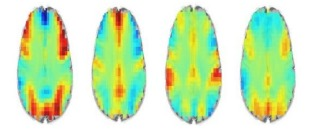
                      <figcaption>
                        Figure 1: Four scans showing the brain activity during
                        the four steps of solving a problem
                      </figcaption>
                    </figure>
                    <span class="order-0"
                      >Relying on functional magnetic resonance imaging
                      scientists captured four images four the brain reflecting
                      the four stages it passes by during solving a problem as
                      illustrated in figure 1.</span
                    >
                  </div>
                  <p>
                    <span
                      >Furthermore, John R. Anderson and his team from this
                      study found how different regions of the brain work in
                      four stages solving the problem. These stages according to
                      this study are encoding, planning, solving, and
                      responding.
                      <tooltip
                        data-bs-toggle="tooltip"
                        data-bs-trigger="manual"
                        data-bs-placement="bottom"
                        data-bs-html="true"
                        title="Loading ..."
                        reference-no="7.2"
                        >[2]
                      </tooltip></span
                    >
                    <span
                      >The four stages are done by different places of the
                      brain, so the completion of this process is done by a
                      connection of certain regions forming a network to solve
                      problems. It doesn’t depend only on how effectively each
                      region did its work, but the successin solving mathematics
                      problems can be measured by how well these certain regions
                      form a network collaborating with each other.
                      <tooltip
                        data-bs-toggle="tooltip"
                        data-bs-trigger="manual"
                        data-bs-placement="bottom"
                        data-bs-html="true"
                        title="Loading ..."
                        reference-no="7.3"
                        >[3]</tooltip
                      ></span
                    >
                  </p>
                </div>
                <div class="subsection">
                  <p class="subtitle">
                    III. Your brain’s response to doing mathematics
                  </p>
                  <div class="floating-figure clearfix">
                    <figure class="float-none float-lg-end order-last">
                      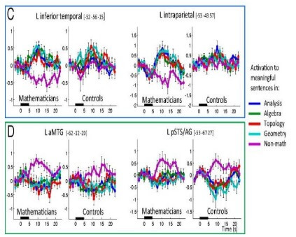
                      <figcaption>
                        Figure 2: Mathematical expertise effect: Interaction
                        indicating a greater difference between meaningful math
                        and non-math statements in mathematicians than in
                        controls.
                      </figcaption>
                    </figure>
                    <span class="order-0"
                      >It was found from brain scans on doing mathematics
                      regions like bilateral intraparietal sulci (IPS),
                      bilateral inferior temporal (IT) regions, bilateral
                      dorsolateral, superior, and medial prefrontal cortex
                      (PFC), and cerebellum seems to be very active. It doesn’t
                      depend only on one of these regions, but it needs all
                      these regions to collaborate together to solve a problem,
                      no matter what this problem is as it turned out that the
                      brain reacts the same on solving the four domains of
                      mathematics as shown in figure 2.
                      <tooltip
                        data-bs-toggle="tooltip"
                        data-bs-trigger="manual"
                        data-bs-placement="bottom"
                        data-bs-html="true"
                        title="Loading ..."
                        reference-no="7.4"
                        >[4]</tooltip
                      >
                    </span>
                  </div>
                </div>
                <div class="subsection">
                  <p class="subtitle">
                    IV. The difference between the various level of problems on
                    brain
                  </p>
                  <div class="floating-figure clearfix">
                    <figure class="float-none float-lg-end order-last">
                      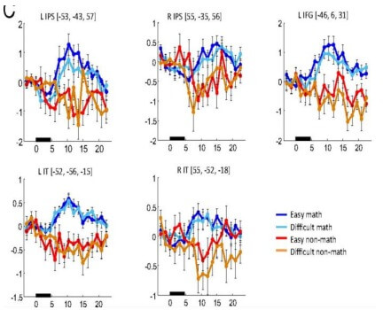
                      <figcaption>
                        Figure 3: This figure shows the effect of subjection to
                        difficult and easy math and difficult and easy non-math.
                      </figcaption>
                    </figure>
                    <span class="order-0"
                      >Solving problems scales from simple arithmetic operations
                      to difficult ones. For instance, it can be simple as
                      solving 1 + 1 = 2, or hard as solving Euler’s formula
                      𝑒<sup>ⅈ𝜋</sup>
                      + 1 = 0. Although a lot of people find the first problem
                      easy that they can solve, while only a few can solve the
                      difficult one, solving both problems activate the same
                      areas of solving an ordinary problem without any
                      difference. And it was found that the difficulty of the
                      problem doesn’t influence what regions needed to solve the
                      problem as illustrated in figure 3.
                      <tooltip
                        data-bs-toggle="tooltip"
                        data-bs-trigger="manual"
                        data-bs-placement="bottom"
                        data-bs-html="true"
                        title="Loading ..."
                        reference-no="7.4"
                        >[4]</tooltip
                      >
                    </span>
                  </div>
                </div>
                <div class="subsection">
                  <p class="subtitle">V. Conclusion</p>
                  <p>
                    <span
                      >Mathematics and non-math problems differ a lot according
                      to the brain’s reaction to each one. It doesn’t matter the
                      difficulty of each question as difficulty didn’t affect
                      your brain’s reaction. The two types showed a great
                      difference in the response from the brain as each type has
                      certain areas required for solving them. What makes this
                      brain mysterious is how the certain regions that are set
                      to do a certain task, for example, solving a mathematics
                      problem collaborate together forming a network that can be
                      responsible for solving this problem.</span
                    >
                  </p>
                </div>
                <div class="references">
                  <div class="subsection">
                    <p class="subtitle">VI. References</p>
                    <div class="row">
                      <div class="col-md-6">
                        <p reference-no="7.1"></p>
                        <p reference-no="7.2"></p>
                        <p reference-no="7.3"></p>
                      </div>
                      <div class="col-md-6">
                        <p reference-no="7.4"></p>
                        <p reference-no="7.5"></p>
                      </div>
                    </div>
                  </div>
                </div>
              </div>
            </div>
          </div>
        </section>
        <!-- END: SECTION 8 -->

        <!--start footer section-->
        <footer class="mt-5">
          <div class="container">
            <div class="row">
              <div class="col-md-4 pb-3">
                
                <h4>Contact Us</h4>
                <p>
                  Reach to us about ideas, suggestion or any questions you have!
                </p>
              </div>

              <div class="col-md-8">
                <div class="jobs">
                  <p class="text-center">
                    Website Managers:
                    <span>Mikhael Mounay | Mohanad Elagan</span>
                  </p>
                </div>
                <div class="social text-center">
                  <a href="https://www.facebook.com/YouthScienceJournall/"
                    ><i class="fa-brands fa-facebook"></i>&nbsp; Facebook</a
                  >
                  <a href="https://www.instagram.com/ysciencejournal/"
                    ><i class="fa-brands fa-instagram"></i>&nbsp; Instagram</a
                  >
                  <a href="https://www.linkedin.com/company/ysj/"
                    ><i class="fa-brands fa-linkedin"></i>&nbsp; LinkedIn</a
                  >
                </div>
              </div>
            </div>
            <div class="rights">
              &copy; 2020-2024 All Rights reserved | Youth Science Journal
            </div>
          </div>
        </footer>
      </div>
      <!-- </div> -->
      <!-- ScrollSpy -->

      <!-- START: TOAST (CLIPBOARD) -->
      <div class="toast-container position-fixed bottom-0 end-0 pb-4 pe-3">
        <div
          class="toast align-items-center"
          id="copied-toast"
          role="alert"
          data-bs-delay="2000"
        >
          <div class="d-flex">
            <div class="toast-body">Link copied to clipboard!</div>
            <button
              type="button"
              class="btn-close btn-close-white me-2 m-auto"
              data-bs-dismiss="toast"
              aria-label="Close"
            ></button>
          </div>
        </div>
      </div>
      <!-- END: TOAST (CLIPBOARD) -->
    </div>

    <link
      rel="stylesheet"
      href="https://use.fontawesome.com/releases/v6.1.1/css/all.css"
    />
    <!-- SCRIPT -->
    <script src="../js/code.jquery.com_jquery-3.6.0.min.js"></script>
    <script src="../bootstrap-5.0.2-dist/js/bootstrap.bundle.js"></script>
    <!-- <script src="https://cdn.jsdelivr.net/npm/vue@3.2.41/dist/vue.global.min.js"></script> -->
    <script src="../js/vue.global.prod.js"></script>
    <script src="../js/nav.js"></script>
    <script src="assets/js/script.js"></script>
  </body>
</html>
